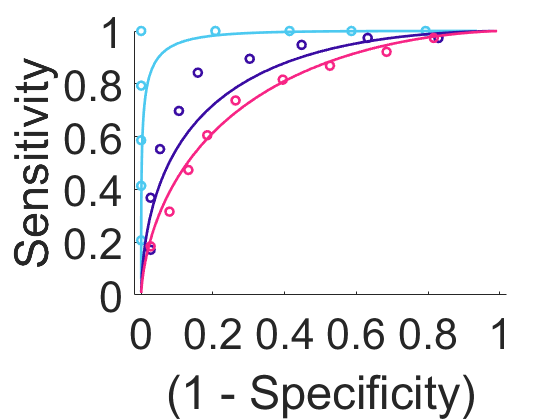
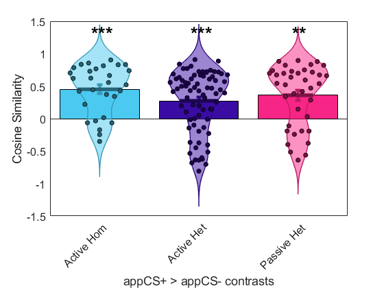

Contents
- author: s-kline
- -- prep --
- set up directories
- load data
- prepare masks for ROI analysis
- mask pattern (only for figures, not analysis)
- mask sample data
- -- Main Analysis --
- test meta fear conditioning signature on appetitive cond data --
- Active Learning/Homogeneous Sample, 0188tk
- Active Learning/Heterogenoeus Sample, 0205ok
- Passive Learning/Heterogeneous Sample, 0187tk
- -- visualize pattern and sample data --
- whole brain fear conditioning pattern
- contrast maps for each sample
- -- Main Results --
- whole brain
- NAcc
- Caudate Nucleus
- Amygdala
- Cerebellum
- -- Secondary Analysis results --
- negative control - signatures
- fear conditioning pattern - table of regions
- SVM appetitive CSplusGTCSminus predictive weight maps
- ROC plot
- tables of region for all samples
- Active Learning/Homogeneous Sample regions
- Active Learning/Heterogeneous Sample regions
- Passive Learning/Heterogeneous Sample regions
- display appetitive CSplusGTCSminus predictive weight maps
- sample 1
- sample 2
- sample 3
author: s-kline
analysis for paper comparing appetitive and aversive conditioning
clear all, close all
-- prep --
set up directories
base_dir = 'D:\Dropbox\aversive appetitive conditioning'; % multivariate pattern dirs meta_dir = fullfile(base_dir, 'mv patterns\n_signature_fear_conditioning\'); % appetitive cond sample dirs MID_0188_dir = fullfile(base_dir,'cond samples\0188ok\CSplus_classifier_onlyPlacebo_for_paper\'); % active hom sample MID_0205_dir = fullfile(base_dir,'cond samples\0205ok\0205_t1_CSplus_classifier_for_paper\'); % active het sample Acq_0187_dir = fullfile(base_dir,'cond samples\0187tk\0187_CSplus_classifier_onlyaware_for_paper\'); % passive het sample
load data
-- neural fear conditiong signature map meta analysis, Fullana et al 2016
meta_fearcond_obj = statistic_image(fullfile(meta_dir, 'MyMean_z.nii.gz')); % map of activations and deactivations related to aversive CS+ color_meta_fearcond = [224 0 97]/255; % ruby (E00061) % ------------------------------------------------------------------------- % -- appetitive conditioning data % Active Learning/Homogeneous Sample (0188ok study, monetary incentive delay) % Kruse et al 2018 color_CSpGTCSm_0188 = [76 201 240]/255; % vivid sky blue (4CC9F0) MID_0188_struct = importdata(fullfile(MID_0188_dir, '\results\image_names_and_setup.mat')); MID_0188_DATA_OBJ = importdata(fullfile(MID_0188_dir, '\results\data_objects.mat')); MID_0188_CONTRASTS_OBJ = importdata(fullfile(MID_0188_dir, '\results\contrast_data_objects.mat')); MID_0188_svm_stats_results = importdata(fullfile(MID_0188_dir, '\results\svm_stats_results_contrasts_masked.mat')); % load data objects and svm results MID_0188_DAT = MID_0188_struct.DAT; CSplus_0188 = fmri_data(MID_0188_DATA_OBJ{1, 3}); CSminus_0188 = fmri_data(MID_0188_DATA_OBJ{1, 6}); CSpGTCSm_0188_con_obj = MID_0188_CONTRASTS_OBJ.DATA_OBJ_CONsc{1,1}; CSpGTCSm_0188_svm_obj = MID_0188_svm_stats_results{1,1}.weight_obj; % ------------------------------------------------------------------------- % Active Learning/Heterogeneous Sample (0205ok study, monetary incentive delay) % Kruse et al 2020 color_CSpGTCSm_0205 = [58 12 163]/255; % blue (trypan blue 3A0CA3) MID_0205_struct = importdata(fullfile(MID_0205_dir, '\results\image_names_and_setup.mat')); MID_0205_DATA_OBJ = importdata(fullfile(MID_0205_dir, '\results\data_objects.mat')); MID_0205_CONTRASTS_OBJ = importdata(fullfile(MID_0205_dir, '\results\contrast_data_objects.mat')); MID_0205_svm_stats_results = importdata(fullfile(MID_0205_dir, '\results\svm_stats_results_contrasts_masked.mat')); % load data objects and svm results MID_0205_DAT = MID_0205_struct.DAT; CSplus_0205 = fmri_data(MID_0205_DATA_OBJ{1, 3}); CSminus_0205 = fmri_data(MID_0205_DATA_OBJ{1, 6}); CSpGTCSm_0205_con_obj = MID_0205_CONTRASTS_OBJ.DATA_OBJ_CONsc{1,1}; CSpGTCSm_0205_svm_obj = MID_0205_svm_stats_results{1,1}.weight_obj; % ------------------------------------------------------------------------- % Passive Learning/Heterogeneous Sample (0187tk study, passive task) % Tapia León et al 2019 color_CSpGTCSm_0187 = [247 37 133]/255; % flickr pink (F72585) Acq_0187_struct = importdata(fullfile(Acq_0187_dir, '\results\image_names_and_setup.mat')); Acq_0187_DATA_OBJ = importdata(fullfile(Acq_0187_dir, '\results\data_objects.mat')); Acq_0187_CONTRASTS_OBJ = importdata(fullfile(Acq_0187_dir, '\results\contrast_data_objects.mat')); Acq_0187_svm_stats_results = importdata(fullfile(Acq_0187_dir, '\results\svm_stats_results_contrasts_masked.mat')); % load data objects and svm results Acq_0187_DAT = Acq_0187_struct.DAT; CSplus_0187 = fmri_data(Acq_0187_DATA_OBJ{1, 1}); CSminus_0187 = fmri_data(Acq_0187_DATA_OBJ{1, 2}); CSpGTCSm_0187_con_obj = Acq_0187_CONTRASTS_OBJ.DATA_OBJ_CONsc{1,1}; CSpGTCSm_0187_svm_obj = Acq_0187_svm_stats_results{1,1}.weight_obj; % -------------------------------------------------------------------------
Direct calls to spm_defauts are deprecated.
Please use spm('Defaults',modality) or spm_get_defaults instead.
Defaults settings have been modified by file(s):
D:\spm12_6685\spm_my_defaults.m
Modified fields: stats mask normalise
Defaults settings have been modified by file(s):
D:\spm12_6685\spm_my_defaults.m
Modified fields: stats mask normalise
prepare masks for ROI analysis
load atlas & regions of interest
atlas_obj = load_atlas('canlab2018_2mm'); basal_ganglia = select_atlas_subset(atlas_obj, 'labels_2', {'Basal_ganglia'}); % Nucleus Accumbens nacc = select_atlas_subset(basal_ganglia, 'labels', {'NAC_L', 'NAC_R'}, 'flatten'); nacc = resample_space(nacc, CSpGTCSm_0188_con_obj); % mask space needs to be resmpled to data space (the samples all have the same space) nacc.fullpath='nacc.nii';nacc.write('overwrite'); % Caudate Nucleus caudate = select_atlas_subset(basal_ganglia, 'labels', {'Caudate_Cp_L', 'Caudate_Cp_R', 'Caudate_Ca_L', 'Caudate_Ca_R'}, 'flatten'); caudate = resample_space(caudate, CSpGTCSm_0188_con_obj); caudate.fullpath='caudate.nii';caudate.write('overwrite'); % Amygdala amygdala = select_atlas_subset(atlas_obj, 'labels_2', {'Amygdala'}, 'flatten'); amygdala = resample_space(amygdala, CSpGTCSm_0188_con_obj); amygdala.fullpath='amygdala.nii';amygdala.write('overwrite'); % Cerebellum cerebellum = select_atlas_subset(atlas_obj, 'labels_2', {'Cerebellum'}, 'flatten'); cerebellum = resample_space(cerebellum, CSpGTCSm_0188_con_obj); cerebellum.fullpath='cerebellum.nii';cerebellum.write('overwrite'); % -------------------------------------------------------------------------
Loading atlas: CANlab_combined_atlas_object_2018_2mm.mat Writing: nacc.nii Writing: caudate.nii Writing: amygdala.nii Writing: cerebellum.nii
mask pattern (only for figures, not analysis)
roi_meta_fearcond_obj_nacc = apply_mask(meta_fearcond_obj, nacc); roi_meta_fearcond_obj_caudate = apply_mask(meta_fearcond_obj, caudate); roi_meta_fearcond_obj_amygdala = apply_mask(meta_fearcond_obj, amygdala); roi_meta_fearcond_obj_cerebellum = apply_mask(meta_fearcond_obj, cerebellum);
mask sample data
Active Learning/Homogeneous Sample
roi_CSpGTCSm_0188_con_obj_nacc = apply_mask(CSpGTCSm_0188_con_obj, nacc); roi_CSpGTCSm_0188_con_obj_caudate = apply_mask(CSpGTCSm_0188_con_obj, caudate); roi_CSpGTCSm_0188_con_obj_amygdala = apply_mask(CSpGTCSm_0188_con_obj, amygdala); roi_CSpGTCSm_0188_con_obj_cerebellum = apply_mask(CSpGTCSm_0188_con_obj, cerebellum); roi_CSplus_0188_nacc = apply_mask(CSplus_0188, nacc); roi_CSminus_0188_nacc = apply_mask(CSminus_0188, nacc); roi_CSplus_0188_caudate = apply_mask(CSplus_0188, caudate); roi_CSminus_0188_caudate = apply_mask(CSminus_0188, caudate); roi_CSplus_0188_amygdala = apply_mask(CSplus_0188, amygdala); roi_CSminus_0188_amygdala = apply_mask(CSminus_0188, amygdala); roi_CSplus_0188_cerebellum = apply_mask(CSplus_0188, cerebellum); roi_CSminus_0188_cerebellum = apply_mask(CSminus_0188, cerebellum); % ------------------------------------------------------------------------- % Active Learning/Heterogeneous Sample roi_CSpGTCSm_0205_con_obj_nacc = apply_mask(CSpGTCSm_0205_con_obj, nacc); roi_CSpGTCSm_0205_con_obj_caudate = apply_mask(CSpGTCSm_0205_con_obj, caudate); roi_CSpGTCSm_0205_con_obj_amygdala = apply_mask(CSpGTCSm_0205_con_obj, amygdala); roi_CSpGTCSm_0205_con_obj_cerebellum = apply_mask(CSpGTCSm_0205_con_obj, cerebellum); roi_CSplus_0205_nacc = apply_mask(CSplus_0205, nacc); roi_CSminus_0205_nacc = apply_mask(CSminus_0205, nacc); roi_CSplus_0205_caudate = apply_mask(CSplus_0205, caudate); roi_CSminus_0205_caudate = apply_mask(CSminus_0205, caudate); roi_CSplus_0205_amygdala = apply_mask(CSplus_0205, amygdala); roi_CSminus_0205_amygdala = apply_mask(CSminus_0205, amygdala); roi_CSplus_0205_cerebellum = apply_mask(CSplus_0205, cerebellum); roi_CSminus_0205_cerebellum = apply_mask(CSminus_0205, cerebellum); % ------------------------------------------------------------------------- % Passive Learning/Heterogeneous Sample roi_CSpGTCSm_0187_con_obj_nacc = apply_mask(CSpGTCSm_0187_con_obj, nacc); roi_CSpGTCSm_0187_con_obj_caudate = apply_mask(CSpGTCSm_0187_con_obj, caudate); roi_CSpGTCSm_0187_con_obj_amygdala = apply_mask(CSpGTCSm_0187_con_obj, amygdala); roi_CSpGTCSm_0187_con_obj_cerebellum = apply_mask(CSpGTCSm_0187_con_obj, cerebellum); roi_CSplus_0187_nacc = apply_mask(CSplus_0187, nacc); roi_CSminus_0187_nacc = apply_mask(CSminus_0187, nacc); roi_CSplus_0187_caudate = apply_mask(CSplus_0187, caudate); roi_CSminus_0187_caudate = apply_mask(CSminus_0187, caudate); roi_CSplus_0187_amygdala = apply_mask(CSplus_0187, amygdala); roi_CSminus_0187_amygdala = apply_mask(CSminus_0187, amygdala); roi_CSplus_0187_cerebellum = apply_mask(CSplus_0187, cerebellum); roi_CSminus_0187_cerebellum = apply_mask(CSminus_0187, cerebellum); % -------------------------------------------------------------------------
-- Main Analysis --
test meta fear conditioning signature on appetitive cond data --
ROI analysis: masked data with ROIs and calculated similarity. the canlab_pattern_similarity doc implies, that the pattern should not be masked, because of how it deals with zeroes in statistic images vs data "Thus, this function treats values of 0 in DATA images, not pattern masks, as missing values, and excludes these voxels from both image and mask when calculating similarity."
metric = 'cosine_similarity';
Active Learning/Homogeneous Sample, 0188tk
similarity of CSpGTCSm contrast data and fear conditioning signature pattern
appCSpGTCSm0188_meta_fear_sim = apply_mask(CSpGTCSm_0188_con_obj,replace_empty(meta_fearcond_obj), 'pattern_expression', 'ignore_missing', metric); CSplus_0188_meta_fear_expression = apply_mask(CSplus_0188,replace_empty(meta_fearcond_obj), 'pattern_expression', 'ignore_missing', metric); CSminus_0188_meta_fear_expression = apply_mask(CSminus_0188,replace_empty(meta_fearcond_obj), 'pattern_expression', 'ignore_missing', metric); % similarity of data masked with ROIs with pattern nacc_appCSpGTCSm0188_meta_fear_sim = apply_mask(roi_CSpGTCSm_0188_con_obj_nacc,replace_empty(meta_fearcond_obj), 'pattern_expression', 'ignore_missing', metric); caudate_appCSpGTCSm0188_meta_fear_sim = apply_mask(roi_CSpGTCSm_0188_con_obj_caudate,replace_empty(meta_fearcond_obj), 'pattern_expression', 'ignore_missing', metric); amygdala_appCSpGTCSm0188_meta_fear_sim = apply_mask(roi_CSpGTCSm_0188_con_obj_amygdala,replace_empty(meta_fearcond_obj), 'pattern_expression', 'ignore_missing', metric); cerebellum_appCSpGTCSm0188_meta_fear_sim = apply_mask(roi_CSpGTCSm_0188_con_obj_cerebellum,replace_empty(meta_fearcond_obj), 'pattern_expression', 'ignore_missing', metric); nacc_CSplus_0188_meta_fear_expression = apply_mask(roi_CSplus_0188_nacc,replace_empty(meta_fearcond_obj), 'pattern_expression', 'ignore_missing', metric); nacc_CSminus_0188_meta_fear_expression = apply_mask(roi_CSminus_0188_nacc,replace_empty(meta_fearcond_obj), 'pattern_expression', 'ignore_missing', metric); caudate_CSplus_0188_meta_fear_expression = apply_mask(roi_CSplus_0188_caudate,replace_empty(meta_fearcond_obj), 'pattern_expression', 'ignore_missing', metric); caudate_CSminus_0188_meta_fear_expression = apply_mask(roi_CSminus_0188_caudate,replace_empty(meta_fearcond_obj), 'pattern_expression', 'ignore_missing', metric); amygdala_CSplus_0188_meta_fear_expression = apply_mask(roi_CSplus_0188_amygdala,replace_empty(meta_fearcond_obj), 'pattern_expression', 'ignore_missing', metric); amygdala_CSminus_0188_meta_fear_expression = apply_mask(roi_CSminus_0188_amygdala,replace_empty(meta_fearcond_obj), 'pattern_expression', 'ignore_missing', metric); cerebellum_CSplus_0188_meta_fear_expression = apply_mask(roi_CSplus_0188_cerebellum,replace_empty(meta_fearcond_obj), 'pattern_expression', 'ignore_missing', metric); cerebellum_CSminus_0188_meta_fear_expression = apply_mask(roi_CSminus_0188_cerebellum,replace_empty(meta_fearcond_obj), 'pattern_expression', 'ignore_missing', metric); % negative control patterns appCSpGTCSm0188_cog_sim = apply_all_signatures(CSpGTCSm_0188_con_obj, 'similarity_metric', metric,... 'conditionnames', {'appCSplusGTCSminus'},... 'image_set', 'pain_cog_emo'); appCSpGTCSm0188_emotion_sim = apply_all_signatures(CSpGTCSm_0188_con_obj, 'similarity_metric', metric,... 'conditionnames', {'appCSplusGTCSminus'},... 'image_set', 'kragelemotion'); appCSpGTCSm0188_pines_sim = apply_all_signatures(CSpGTCSm_0188_con_obj, 'similarity_metric', metric,... 'conditionnames', {'appCSplusGTCSminus'},... 'image_set', 'pines'); appCSpGTCSm0188_stroop_sim = apply_all_signatures(CSpGTCSm_0188_con_obj, 'similarity_metric', metric,... 'conditionnames', {'appCSplusGTCSminus'},... 'image_set', 'stroop');
Defaults settings have been modified by file(s): D:\spm12_6685\spm_my_defaults.m Modified fields: stats mask normalise Loaded images: D:\CANlab\Neuroimaging_Pattern_Masks\Multivariate_signature_patterns\2018_Kragel_MFC_Generalizability\bPLS_pMCC_Pain.nii D:\CANlab\Neuroimaging_Pattern_Masks\Multivariate_signature_patterns\2018_Kragel_MFC_Generalizability\bPLS_aMCC_Pain.nii D:\CANlab\Neuroimaging_Pattern_Masks\Multivariate_signature_patterns\2018_Kragel_MFC_Generalizability\bPLS_pACC_Pain.nii D:\CANlab\Neuroimaging_Pattern_Masks\Multivariate_signature_patterns\2018_Kragel_MFC_Generalizability\bPLS_sgACC_Pain.nii D:\CANlab\Neuroimaging_Pattern_Masks\Multivariate_signature_patterns\2018_Kragel_MFC_Generalizability\bPLS_vmPFC_Pain.nii D:\CANlab\Neuroimaging_Pattern_Masks\Multivariate_signature_patterns\2018_Kragel_MFC_Generalizability\bPLS_dMFC_Pain.nii D:\CANlab\Neuroimaging_Pattern_Masks\Multivariate_signature_patterns\2018_Kragel_MFC_Generalizability\bPLS_MFC_Pain.nii D:\CANlab\Neuroimaging_Pattern_Masks\Multivariate_signature_patterns\2018_Kragel_MFC_Generalizability\bPLS_Wholebrain_Pain.nii D:\CANlab\Neuroimaging_Pattern_Masks\Multivariate_signature_patterns\2018_Kragel_MFC_Generalizability\bPLS_pMCC_Cognitive_Control.nii D:\CANlab\Neuroimaging_Pattern_Masks\Multivariate_signature_patterns\2018_Kragel_MFC_Generalizability\bPLS_aMCC_Cognitive_Control.nii D:\CANlab\Neuroimaging_Pattern_Masks\Multivariate_signature_patterns\2018_Kragel_MFC_Generalizability\bPLS_pACC_Cognitive_Control.nii D:\CANlab\Neuroimaging_Pattern_Masks\Multivariate_signature_patterns\2018_Kragel_MFC_Generalizability\bPLS_sgACC_Cognitive_Control.nii D:\CANlab\Neuroimaging_Pattern_Masks\Multivariate_signature_patterns\2018_Kragel_MFC_Generalizability\bPLS_vmPFC_Cognitive_Control.nii D:\CANlab\Neuroimaging_Pattern_Masks\Multivariate_signature_patterns\2018_Kragel_MFC_Generalizability\bPLS_dMFC_Cognitive_Control.nii D:\CANlab\Neuroimaging_Pattern_Masks\Multivariate_signature_patterns\2018_Kragel_MFC_Generalizability\bPLS_MFC_Cognitive_Control.nii D:\CANlab\Neuroimaging_Pattern_Masks\Multivariate_signature_patterns\2018_Kragel_MFC_Generalizability\bPLS_Wholebrain_Cognitive_Control.nii D:\CANlab\Neuroimaging_Pattern_Masks\Multivariate_signature_patterns\2018_Kragel_MFC_Generalizability\bPLS_pMCC_Negative_Emotion.nii D:\CANlab\Neuroimaging_Pattern_Masks\Multivariate_signature_patterns\2018_Kragel_MFC_Generalizability\bPLS_aMCC_Negative_Emotion.nii D:\CANlab\Neuroimaging_Pattern_Masks\Multivariate_signature_patterns\2018_Kragel_MFC_Generalizability\bPLS_pACC_Negative_Emotion.nii D:\CANlab\Neuroimaging_Pattern_Masks\Multivariate_signature_patterns\2018_Kragel_MFC_Generalizability\bPLS_sgACC_Negative_Emotion.nii D:\CANlab\Neuroimaging_Pattern_Masks\Multivariate_signature_patterns\2018_Kragel_MFC_Generalizability\bPLS_vmPFC_Negative_Emotion.nii D:\CANlab\Neuroimaging_Pattern_Masks\Multivariate_signature_patterns\2018_Kragel_MFC_Generalizability\bPLS_dMFC_Negative_Emotion.nii D:\CANlab\Neuroimaging_Pattern_Masks\Multivariate_signature_patterns\2018_Kragel_MFC_Generalizability\bPLS_MFC_Negative_Emotion.nii D:\CANlab\Neuroimaging_Pattern_Masks\Multivariate_signature_patterns\2018_Kragel_MFC_Generalizability\bPLS_Wholebrain_Negative_Emotion.nii Pain_pMCC Pain_aMCC Pain_pACC Pain_sgACC Pain_vmPFC Pain_dMFC Pain_MFC Pain_Wholebrain Cog_pMCC Cog_aMCC Cog_pACC Cog_sgACC Cog_vmPFC Cog_dMFC Cog_MFC Cog_Wholebrain Emo_pMCC Emo_aMCC Emo_pACC Emo_sgACC Emo_vmPFC Emo_dMFC Emo_MFC Emo_Wholebrain Defaults settings have been modified by file(s): D:\spm12_6685\spm_my_defaults.m Modified fields: stats mask normalise Defaults settings have been modified by file(s): D:\spm12_6685\spm_my_defaults.m Modified fields: stats mask normalise Loaded images: D:\CANlab\Neuroimaging_Pattern_Masks\Multivariate_signature_patterns\2015_Kragel_emotionClassificationBPLS\mean_3comp_amused_group_emotion_PLS_beta_BSz_10000it.img D:\CANlab\Neuroimaging_Pattern_Masks\Multivariate_signature_patterns\2015_Kragel_emotionClassificationBPLS\mean_3comp_angry_group_emotion_PLS_beta_BSz_10000it.img D:\CANlab\Neuroimaging_Pattern_Masks\Multivariate_signature_patterns\2015_Kragel_emotionClassificationBPLS\mean_3comp_content_group_emotion_PLS_beta_BSz_10000it.img D:\CANlab\Neuroimaging_Pattern_Masks\Multivariate_signature_patterns\2015_Kragel_emotionClassificationBPLS\mean_3comp_fearful_group_emotion_PLS_beta_BSz_10000it.img D:\CANlab\Neuroimaging_Pattern_Masks\Multivariate_signature_patterns\2015_Kragel_emotionClassificationBPLS\mean_3comp_neutral_group_emotion_PLS_beta_BSz_10000it.img D:\CANlab\Neuroimaging_Pattern_Masks\Multivariate_signature_patterns\2015_Kragel_emotionClassificationBPLS\mean_3comp_sad_group_emotion_PLS_beta_BSz_10000it.img D:\CANlab\Neuroimaging_Pattern_Masks\Multivariate_signature_patterns\2015_Kragel_emotionClassificationBPLS\mean_3comp_surprised_group_emotion_PLS_beta_BSz_10000it.img Amused Angry Content Fearful Neutral Sad Surprised Defaults settings have been modified by file(s): D:\spm12_6685\spm_my_defaults.m Modified fields: stats mask normalise Loaded images: D:\CANlab\Neuroimaging_Pattern_Masks\Multivariate_signature_patterns\2015_Chang_PLoSBiology_PINES\Rating_Weights_LOSO_2.nii PINES Defaults settings have been modified by file(s): D:\spm12_6685\spm_my_defaults.m Modified fields: stats mask normalise Defaults settings have been modified by file(s): D:\spm12_6685\spm_my_defaults.m Modified fields: stats mask normalise Loaded images: D:\CANlab\Neuroimaging_Pattern_Masks\Multivariate_signature_patterns\2020_Silvestrini_Rainville_Pain_CogControl_interaction_aMCC\stroop_pattern_wani_121416.nii Stroop
Active Learning/Heterogenoeus Sample, 0205ok
similarity of CSpGTCSm contrast data and fear conditioning signature pattern
appCSpGTCSm0205_meta_fear_sim = apply_mask(CSpGTCSm_0205_con_obj,replace_empty(meta_fearcond_obj), 'pattern_expression', 'ignore_missing', metric); CSplus_0205_meta_fear_expression = apply_mask(CSplus_0205,replace_empty(meta_fearcond_obj), 'pattern_expression', metric); CSminus_0205_meta_fear_expression = apply_mask(CSminus_0205,replace_empty(meta_fearcond_obj), 'pattern_expression', metric); % similarity of data masked with ROIs with pattern nacc_appCSpGTCSm0205_meta_fear_sim = apply_mask(roi_CSpGTCSm_0205_con_obj_nacc,replace_empty(meta_fearcond_obj), 'pattern_expression', 'ignore_missing', metric); caudate_appCSpGTCSm0205_meta_fear_sim = apply_mask(roi_CSpGTCSm_0205_con_obj_caudate,replace_empty(meta_fearcond_obj), 'pattern_expression', 'ignore_missing', metric); amygdala_appCSpGTCSm0205_meta_fear_sim = apply_mask(roi_CSpGTCSm_0205_con_obj_amygdala,replace_empty(meta_fearcond_obj), 'pattern_expression', 'ignore_missing', metric); cerebellum_appCSpGTCSm0205_meta_fear_sim = apply_mask(roi_CSpGTCSm_0205_con_obj_cerebellum,replace_empty(meta_fearcond_obj), 'pattern_expression', 'ignore_missing', metric); nacc_CSplus_0205_meta_fear_expression = apply_mask(roi_CSplus_0205_nacc,replace_empty(meta_fearcond_obj), 'pattern_expression', 'ignore_missing', metric); nacc_CSminus_0205_meta_fear_expression = apply_mask(roi_CSminus_0205_nacc,replace_empty(meta_fearcond_obj), 'pattern_expression', 'ignore_missing', metric); caudate_CSplus_0205_meta_fear_expression = apply_mask(roi_CSplus_0205_caudate,replace_empty(meta_fearcond_obj), 'pattern_expression', 'ignore_missing', metric); caudate_CSminus_0205_meta_fear_expression = apply_mask(roi_CSminus_0205_caudate,replace_empty(meta_fearcond_obj), 'pattern_expression', 'ignore_missing', metric); amygdala_CSplus_0205_meta_fear_expression = apply_mask(roi_CSplus_0205_amygdala,replace_empty(meta_fearcond_obj), 'pattern_expression', 'ignore_missing', metric); amygdala_CSminus_0205_meta_fear_expression = apply_mask(roi_CSminus_0205_amygdala,replace_empty(meta_fearcond_obj), 'pattern_expression', 'ignore_missing', metric); cerebellum_CSplus_0205_meta_fear_expression = apply_mask(roi_CSplus_0205_cerebellum,replace_empty(meta_fearcond_obj), 'pattern_expression', 'ignore_missing', metric); cerebellum_CSminus_0205_meta_fear_expression = apply_mask(roi_CSminus_0205_cerebellum,replace_empty(meta_fearcond_obj), 'pattern_expression', 'ignore_missing', metric); % negative control patterns appCSpGTCSm0205_cog_sim = apply_all_signatures(CSpGTCSm_0205_con_obj, 'similarity_metric', metric,... 'conditionnames', {'appCSplusGTCSminus'},... 'image_set', 'pain_cog_emo'); appCSpGTCSm0205_emotion_sim = apply_all_signatures(CSpGTCSm_0205_con_obj, 'similarity_metric', metric,... 'conditionnames', {'appCSplusGTCSminus'},... 'image_set', 'kragelemotion'); appCSpGTCSm0205_pines_sim = apply_all_signatures(CSpGTCSm_0205_con_obj, 'similarity_metric', metric,... 'conditionnames', {'appCSplusGTCSminus'},... 'image_set', 'pines'); appCSpGTCSm0205_stroop_sim = apply_all_signatures(CSpGTCSm_0205_con_obj, 'similarity_metric', metric,... 'conditionnames', {'appCSplusGTCSminus'},... 'image_set', 'stroop');
Warning: Some images have zero values in some of the 78218 voxels in weight mask. These will be excluded from similarity analysis image-wise. Number of zero or NaN values within weight mask, by input image: 129 63 89 306 222 164 85 342 172 48 143 136 248 91 185 113 56 228 171 186 60 9 170 43 188 58 57 187 288 59 330 285 74 475 137 181 74 47 58 164 56 187 221 344 81 247 199 444 51 138 22 139 161 171 235 139 177 149 314 315 163 187 228 17 288 210 74 155 169 255 478 45 210 143 125 78 Warning: Some images have zero values in some of the 78218 voxels in weight mask. These will be excluded from similarity analysis image-wise. Number of zero or NaN values within weight mask, by input image: 129 63 89 306 222 164 85 342 172 48 143 136 248 91 185 113 56 228 171 186 60 9 170 43 188 58 57 187 288 59 330 285 74 475 137 181 74 47 58 164 56 187 221 344 81 247 199 444 51 138 22 139 161 171 235 139 177 149 314 315 163 187 228 17 288 210 74 155 169 255 478 45 210 143 125 78 Defaults settings have been modified by file(s): D:\spm12_6685\spm_my_defaults.m Modified fields: stats mask normalise Loaded images: D:\CANlab\Neuroimaging_Pattern_Masks\Multivariate_signature_patterns\2018_Kragel_MFC_Generalizability\bPLS_pMCC_Pain.nii D:\CANlab\Neuroimaging_Pattern_Masks\Multivariate_signature_patterns\2018_Kragel_MFC_Generalizability\bPLS_aMCC_Pain.nii D:\CANlab\Neuroimaging_Pattern_Masks\Multivariate_signature_patterns\2018_Kragel_MFC_Generalizability\bPLS_pACC_Pain.nii D:\CANlab\Neuroimaging_Pattern_Masks\Multivariate_signature_patterns\2018_Kragel_MFC_Generalizability\bPLS_sgACC_Pain.nii D:\CANlab\Neuroimaging_Pattern_Masks\Multivariate_signature_patterns\2018_Kragel_MFC_Generalizability\bPLS_vmPFC_Pain.nii D:\CANlab\Neuroimaging_Pattern_Masks\Multivariate_signature_patterns\2018_Kragel_MFC_Generalizability\bPLS_dMFC_Pain.nii D:\CANlab\Neuroimaging_Pattern_Masks\Multivariate_signature_patterns\2018_Kragel_MFC_Generalizability\bPLS_MFC_Pain.nii D:\CANlab\Neuroimaging_Pattern_Masks\Multivariate_signature_patterns\2018_Kragel_MFC_Generalizability\bPLS_Wholebrain_Pain.nii D:\CANlab\Neuroimaging_Pattern_Masks\Multivariate_signature_patterns\2018_Kragel_MFC_Generalizability\bPLS_pMCC_Cognitive_Control.nii D:\CANlab\Neuroimaging_Pattern_Masks\Multivariate_signature_patterns\2018_Kragel_MFC_Generalizability\bPLS_aMCC_Cognitive_Control.nii D:\CANlab\Neuroimaging_Pattern_Masks\Multivariate_signature_patterns\2018_Kragel_MFC_Generalizability\bPLS_pACC_Cognitive_Control.nii D:\CANlab\Neuroimaging_Pattern_Masks\Multivariate_signature_patterns\2018_Kragel_MFC_Generalizability\bPLS_sgACC_Cognitive_Control.nii D:\CANlab\Neuroimaging_Pattern_Masks\Multivariate_signature_patterns\2018_Kragel_MFC_Generalizability\bPLS_vmPFC_Cognitive_Control.nii D:\CANlab\Neuroimaging_Pattern_Masks\Multivariate_signature_patterns\2018_Kragel_MFC_Generalizability\bPLS_dMFC_Cognitive_Control.nii D:\CANlab\Neuroimaging_Pattern_Masks\Multivariate_signature_patterns\2018_Kragel_MFC_Generalizability\bPLS_MFC_Cognitive_Control.nii D:\CANlab\Neuroimaging_Pattern_Masks\Multivariate_signature_patterns\2018_Kragel_MFC_Generalizability\bPLS_Wholebrain_Cognitive_Control.nii D:\CANlab\Neuroimaging_Pattern_Masks\Multivariate_signature_patterns\2018_Kragel_MFC_Generalizability\bPLS_pMCC_Negative_Emotion.nii D:\CANlab\Neuroimaging_Pattern_Masks\Multivariate_signature_patterns\2018_Kragel_MFC_Generalizability\bPLS_aMCC_Negative_Emotion.nii D:\CANlab\Neuroimaging_Pattern_Masks\Multivariate_signature_patterns\2018_Kragel_MFC_Generalizability\bPLS_pACC_Negative_Emotion.nii D:\CANlab\Neuroimaging_Pattern_Masks\Multivariate_signature_patterns\2018_Kragel_MFC_Generalizability\bPLS_sgACC_Negative_Emotion.nii D:\CANlab\Neuroimaging_Pattern_Masks\Multivariate_signature_patterns\2018_Kragel_MFC_Generalizability\bPLS_vmPFC_Negative_Emotion.nii D:\CANlab\Neuroimaging_Pattern_Masks\Multivariate_signature_patterns\2018_Kragel_MFC_Generalizability\bPLS_dMFC_Negative_Emotion.nii D:\CANlab\Neuroimaging_Pattern_Masks\Multivariate_signature_patterns\2018_Kragel_MFC_Generalizability\bPLS_MFC_Negative_Emotion.nii D:\CANlab\Neuroimaging_Pattern_Masks\Multivariate_signature_patterns\2018_Kragel_MFC_Generalizability\bPLS_Wholebrain_Negative_Emotion.nii Pain_pMCC Pain_aMCC Pain_pACC Pain_sgACC Pain_vmPFC Pain_dMFC Pain_MFC Pain_Wholebrain Cog_pMCC Cog_aMCC Cog_pACC Cog_sgACC Cog_vmPFC Cog_dMFC Cog_MFC Cog_Wholebrain Emo_pMCC Emo_aMCC Emo_pACC Emo_sgACC Emo_vmPFC Emo_dMFC Emo_MFC Emo_Wholebrain Defaults settings have been modified by file(s): D:\spm12_6685\spm_my_defaults.m Modified fields: stats mask normalise Defaults settings have been modified by file(s): D:\spm12_6685\spm_my_defaults.m Modified fields: stats mask normalise Loaded images: D:\CANlab\Neuroimaging_Pattern_Masks\Multivariate_signature_patterns\2015_Kragel_emotionClassificationBPLS\mean_3comp_amused_group_emotion_PLS_beta_BSz_10000it.img D:\CANlab\Neuroimaging_Pattern_Masks\Multivariate_signature_patterns\2015_Kragel_emotionClassificationBPLS\mean_3comp_angry_group_emotion_PLS_beta_BSz_10000it.img D:\CANlab\Neuroimaging_Pattern_Masks\Multivariate_signature_patterns\2015_Kragel_emotionClassificationBPLS\mean_3comp_content_group_emotion_PLS_beta_BSz_10000it.img D:\CANlab\Neuroimaging_Pattern_Masks\Multivariate_signature_patterns\2015_Kragel_emotionClassificationBPLS\mean_3comp_fearful_group_emotion_PLS_beta_BSz_10000it.img D:\CANlab\Neuroimaging_Pattern_Masks\Multivariate_signature_patterns\2015_Kragel_emotionClassificationBPLS\mean_3comp_neutral_group_emotion_PLS_beta_BSz_10000it.img D:\CANlab\Neuroimaging_Pattern_Masks\Multivariate_signature_patterns\2015_Kragel_emotionClassificationBPLS\mean_3comp_sad_group_emotion_PLS_beta_BSz_10000it.img D:\CANlab\Neuroimaging_Pattern_Masks\Multivariate_signature_patterns\2015_Kragel_emotionClassificationBPLS\mean_3comp_surprised_group_emotion_PLS_beta_BSz_10000it.img Amused Angry Content Fearful Neutral Sad Surprised Defaults settings have been modified by file(s): D:\spm12_6685\spm_my_defaults.m Modified fields: stats mask normalise Loaded images: D:\CANlab\Neuroimaging_Pattern_Masks\Multivariate_signature_patterns\2015_Chang_PLoSBiology_PINES\Rating_Weights_LOSO_2.nii PINES Defaults settings have been modified by file(s): D:\spm12_6685\spm_my_defaults.m Modified fields: stats mask normalise Defaults settings have been modified by file(s): D:\spm12_6685\spm_my_defaults.m Modified fields: stats mask normalise Loaded images: D:\CANlab\Neuroimaging_Pattern_Masks\Multivariate_signature_patterns\2020_Silvestrini_Rainville_Pain_CogControl_interaction_aMCC\stroop_pattern_wani_121416.nii Stroop
Passive Learning/Heterogeneous Sample, 0187tk
similarity of CSpGTCSm contrast data and fear conditioning signature pattern
appCSpGTCSm0187_meta_fear_sim = apply_mask(CSpGTCSm_0187_con_obj,replace_empty(meta_fearcond_obj), 'pattern_expression', 'ignore_missing', metric); CSplus_0187_meta_fear_expression = apply_mask(CSplus_0187,replace_empty(meta_fearcond_obj), 'pattern_expression', metric); CSminus_0187_meta_fear_expression = apply_mask(CSminus_0187,replace_empty(meta_fearcond_obj), 'pattern_expression', metric); % similarity of data masked with ROIs with pattern nacc_appCSpGTCSm0187_meta_fear_sim = apply_mask(roi_CSpGTCSm_0187_con_obj_nacc, replace_empty(meta_fearcond_obj), 'pattern_expression', 'ignore_missing', metric); caudate_appCSpGTCSm0187_meta_fear_sim = apply_mask(roi_CSpGTCSm_0187_con_obj_caudate, replace_empty(meta_fearcond_obj), 'pattern_expression', 'ignore_missing', metric); amygdala_appCSpGTCSm0187_meta_fear_sim = apply_mask(roi_CSpGTCSm_0187_con_obj_amygdala,replace_empty(meta_fearcond_obj), 'pattern_expression', 'ignore_missing', metric); cerebellum_appCSpGTCSm0187_meta_fear_sim = apply_mask(roi_CSpGTCSm_0187_con_obj_cerebellum,replace_empty(meta_fearcond_obj), 'pattern_expression', 'ignore_missing', metric); nacc_CSplus_0187_meta_fear_expression = apply_mask(roi_CSplus_0187_nacc,replace_empty(meta_fearcond_obj), 'pattern_expression', 'ignore_missing', metric); nacc_CSminus_0187_meta_fear_expression = apply_mask(roi_CSminus_0187_nacc,replace_empty(meta_fearcond_obj), 'pattern_expression', 'ignore_missing', metric); caudate_CSplus_0187_meta_fear_expression = apply_mask(roi_CSplus_0187_caudate,replace_empty(meta_fearcond_obj), 'pattern_expression', 'ignore_missing', metric); caudate_CSminus_0187_meta_fear_expression = apply_mask(roi_CSminus_0187_caudate,replace_empty(meta_fearcond_obj), 'pattern_expression', 'ignore_missing', metric); amygdala_CSplus_0187_meta_fear_expression = apply_mask(roi_CSplus_0187_amygdala,replace_empty(meta_fearcond_obj), 'pattern_expression', 'ignore_missing', metric); amygdala_CSminus_0187_meta_fear_expression = apply_mask(roi_CSminus_0187_amygdala,replace_empty(meta_fearcond_obj), 'pattern_expression', 'ignore_missing', metric); cerebellum_CSplus_0187_meta_fear_expression = apply_mask(roi_CSplus_0187_cerebellum,replace_empty(meta_fearcond_obj), 'pattern_expression', 'ignore_missing', metric); cerebellum_CSminus_0187_meta_fear_expression = apply_mask(roi_CSminus_0187_cerebellum,replace_empty(meta_fearcond_obj), 'pattern_expression', 'ignore_missing', metric); % negative control patterns appCSpGTCSm0187_cog_sim = apply_all_signatures(CSpGTCSm_0187_con_obj, 'similarity_metric', metric,... 'conditionnames', {'appCSplusGTCSminus'},... 'image_set', 'pain_cog_emo'); appCSpGTCSm0187_emotion_sim = apply_all_signatures(CSpGTCSm_0187_con_obj, 'similarity_metric', metric,... 'conditionnames', {'appCSplusGTCSminus'},... 'image_set', 'kragelemotion'); appCSpGTCSm0187_pines_sim = apply_all_signatures(CSpGTCSm_0187_con_obj, 'similarity_metric', metric,... 'conditionnames', {'appCSplusGTCSminus'},... 'image_set', 'pines'); appCSpGTCSm0187_stroop_sim = apply_all_signatures(CSpGTCSm_0187_con_obj, 'similarity_metric', metric,... 'conditionnames', {'appCSplusGTCSminus'},... 'image_set', 'stroop');
Warning: Some images have zero values in some of the 78218 voxels in weight mask. These will be excluded from similarity analysis image-wise. Number of zero or NaN values within weight mask, by input image: 25 43 87 167 329 227 268 188 38 113 109 67 81 196 103 196 119 81 344 0 160 152 203 134 273 92 360 102 164 147 196 56 326 45 20 109 61 169 Warning: Some images have zero values in some of the 78218 voxels in weight mask. These will be excluded from similarity analysis image-wise. Number of zero or NaN values within weight mask, by input image: 25 43 87 167 329 227 268 188 38 113 109 67 81 196 103 196 119 81 344 0 160 152 203 134 273 92 360 102 164 147 196 56 326 45 20 109 61 169 Defaults settings have been modified by file(s): D:\spm12_6685\spm_my_defaults.m Modified fields: stats mask normalise Loaded images: D:\CANlab\Neuroimaging_Pattern_Masks\Multivariate_signature_patterns\2018_Kragel_MFC_Generalizability\bPLS_pMCC_Pain.nii D:\CANlab\Neuroimaging_Pattern_Masks\Multivariate_signature_patterns\2018_Kragel_MFC_Generalizability\bPLS_aMCC_Pain.nii D:\CANlab\Neuroimaging_Pattern_Masks\Multivariate_signature_patterns\2018_Kragel_MFC_Generalizability\bPLS_pACC_Pain.nii D:\CANlab\Neuroimaging_Pattern_Masks\Multivariate_signature_patterns\2018_Kragel_MFC_Generalizability\bPLS_sgACC_Pain.nii D:\CANlab\Neuroimaging_Pattern_Masks\Multivariate_signature_patterns\2018_Kragel_MFC_Generalizability\bPLS_vmPFC_Pain.nii D:\CANlab\Neuroimaging_Pattern_Masks\Multivariate_signature_patterns\2018_Kragel_MFC_Generalizability\bPLS_dMFC_Pain.nii D:\CANlab\Neuroimaging_Pattern_Masks\Multivariate_signature_patterns\2018_Kragel_MFC_Generalizability\bPLS_MFC_Pain.nii D:\CANlab\Neuroimaging_Pattern_Masks\Multivariate_signature_patterns\2018_Kragel_MFC_Generalizability\bPLS_Wholebrain_Pain.nii D:\CANlab\Neuroimaging_Pattern_Masks\Multivariate_signature_patterns\2018_Kragel_MFC_Generalizability\bPLS_pMCC_Cognitive_Control.nii D:\CANlab\Neuroimaging_Pattern_Masks\Multivariate_signature_patterns\2018_Kragel_MFC_Generalizability\bPLS_aMCC_Cognitive_Control.nii D:\CANlab\Neuroimaging_Pattern_Masks\Multivariate_signature_patterns\2018_Kragel_MFC_Generalizability\bPLS_pACC_Cognitive_Control.nii D:\CANlab\Neuroimaging_Pattern_Masks\Multivariate_signature_patterns\2018_Kragel_MFC_Generalizability\bPLS_sgACC_Cognitive_Control.nii D:\CANlab\Neuroimaging_Pattern_Masks\Multivariate_signature_patterns\2018_Kragel_MFC_Generalizability\bPLS_vmPFC_Cognitive_Control.nii D:\CANlab\Neuroimaging_Pattern_Masks\Multivariate_signature_patterns\2018_Kragel_MFC_Generalizability\bPLS_dMFC_Cognitive_Control.nii D:\CANlab\Neuroimaging_Pattern_Masks\Multivariate_signature_patterns\2018_Kragel_MFC_Generalizability\bPLS_MFC_Cognitive_Control.nii D:\CANlab\Neuroimaging_Pattern_Masks\Multivariate_signature_patterns\2018_Kragel_MFC_Generalizability\bPLS_Wholebrain_Cognitive_Control.nii D:\CANlab\Neuroimaging_Pattern_Masks\Multivariate_signature_patterns\2018_Kragel_MFC_Generalizability\bPLS_pMCC_Negative_Emotion.nii D:\CANlab\Neuroimaging_Pattern_Masks\Multivariate_signature_patterns\2018_Kragel_MFC_Generalizability\bPLS_aMCC_Negative_Emotion.nii D:\CANlab\Neuroimaging_Pattern_Masks\Multivariate_signature_patterns\2018_Kragel_MFC_Generalizability\bPLS_pACC_Negative_Emotion.nii D:\CANlab\Neuroimaging_Pattern_Masks\Multivariate_signature_patterns\2018_Kragel_MFC_Generalizability\bPLS_sgACC_Negative_Emotion.nii D:\CANlab\Neuroimaging_Pattern_Masks\Multivariate_signature_patterns\2018_Kragel_MFC_Generalizability\bPLS_vmPFC_Negative_Emotion.nii D:\CANlab\Neuroimaging_Pattern_Masks\Multivariate_signature_patterns\2018_Kragel_MFC_Generalizability\bPLS_dMFC_Negative_Emotion.nii D:\CANlab\Neuroimaging_Pattern_Masks\Multivariate_signature_patterns\2018_Kragel_MFC_Generalizability\bPLS_MFC_Negative_Emotion.nii D:\CANlab\Neuroimaging_Pattern_Masks\Multivariate_signature_patterns\2018_Kragel_MFC_Generalizability\bPLS_Wholebrain_Negative_Emotion.nii Pain_pMCC Pain_aMCC Pain_pACC Pain_sgACC Pain_vmPFC Pain_dMFC Pain_MFC Pain_Wholebrain Cog_pMCC Cog_aMCC Cog_pACC Cog_sgACC Cog_vmPFC Cog_dMFC Cog_MFC Cog_Wholebrain Emo_pMCC Emo_aMCC Emo_pACC Emo_sgACC Emo_vmPFC Emo_dMFC Emo_MFC Emo_Wholebrain Defaults settings have been modified by file(s): D:\spm12_6685\spm_my_defaults.m Modified fields: stats mask normalise Defaults settings have been modified by file(s): D:\spm12_6685\spm_my_defaults.m Modified fields: stats mask normalise Loaded images: D:\CANlab\Neuroimaging_Pattern_Masks\Multivariate_signature_patterns\2015_Kragel_emotionClassificationBPLS\mean_3comp_amused_group_emotion_PLS_beta_BSz_10000it.img D:\CANlab\Neuroimaging_Pattern_Masks\Multivariate_signature_patterns\2015_Kragel_emotionClassificationBPLS\mean_3comp_angry_group_emotion_PLS_beta_BSz_10000it.img D:\CANlab\Neuroimaging_Pattern_Masks\Multivariate_signature_patterns\2015_Kragel_emotionClassificationBPLS\mean_3comp_content_group_emotion_PLS_beta_BSz_10000it.img D:\CANlab\Neuroimaging_Pattern_Masks\Multivariate_signature_patterns\2015_Kragel_emotionClassificationBPLS\mean_3comp_fearful_group_emotion_PLS_beta_BSz_10000it.img D:\CANlab\Neuroimaging_Pattern_Masks\Multivariate_signature_patterns\2015_Kragel_emotionClassificationBPLS\mean_3comp_neutral_group_emotion_PLS_beta_BSz_10000it.img D:\CANlab\Neuroimaging_Pattern_Masks\Multivariate_signature_patterns\2015_Kragel_emotionClassificationBPLS\mean_3comp_sad_group_emotion_PLS_beta_BSz_10000it.img D:\CANlab\Neuroimaging_Pattern_Masks\Multivariate_signature_patterns\2015_Kragel_emotionClassificationBPLS\mean_3comp_surprised_group_emotion_PLS_beta_BSz_10000it.img Amused Angry Content Fearful Neutral Sad Surprised Defaults settings have been modified by file(s): D:\spm12_6685\spm_my_defaults.m Modified fields: stats mask normalise Loaded images: D:\CANlab\Neuroimaging_Pattern_Masks\Multivariate_signature_patterns\2015_Chang_PLoSBiology_PINES\Rating_Weights_LOSO_2.nii PINES Defaults settings have been modified by file(s): D:\spm12_6685\spm_my_defaults.m Modified fields: stats mask normalise Defaults settings have been modified by file(s): D:\spm12_6685\spm_my_defaults.m Modified fields: stats mask normalise Loaded images: D:\CANlab\Neuroimaging_Pattern_Masks\Multivariate_signature_patterns\2020_Silvestrini_Rainville_Pain_CogControl_interaction_aMCC\stroop_pattern_wani_121416.nii Stroop
-- visualize pattern and sample data --
whole brain fear conditioning pattern
one subcortical cutaway
create_figure('fear conditoning pattern - whole brain') my_display_obj = addbrain('right_cutaway'); my_display_obj = [my_display_obj addbrain('cerebellum')]; set(my_display_obj, 'FaceAlpha', 1); render_on_surface(meta_fearcond_obj, my_display_obj); view(222, 5); lightRestoreSingle; drawnow, snapnow % other cutaways % possible keywords: {'left_cutaway' 'right_cutaway' 'left_insula_slab' 'right_insula_slab' 'accumbens_slab' 'coronal_slabs' 'coronal_slabs_4' 'coronal_slabs_5'} keywords = {'left_cutaway', 'accumbens_slab' 'coronal_slabs_4'}; for i = 1:length(keywords) create_figure('cutaways'); axis off surface_handles = surface(meta_fearcond_obj, keywords{i}); drawnow, snapnow end clf()
ans =
Figure (fear conditoning pattern - whole brain) with properties:
Number: 1
Name: 'fear conditoning pattern - whole brain'
Color: [1 1 1]
Position: [488 342 560 420]
Units: 'pixels'
Use GET to show all properties
ans =
Light with properties:
Color: [1 1 1]
Style: 'infinite'
Position: [1.4142 -8.6596e-17 0]
Visible: 'on'
Use GET to show all properties
Anatomical image: Adapted from the 7T high-resolution atlas of Keuken, Forstmann et al.
Keuken et al. (2014). Quantifying inter-individual anatomical variability in the subcortex using 7T structural MRI.
Forstmann, Birte U., Max C. Keuken, Andreas Schafer, Pierre-Louis Bazin, Anneke Alkemade, and Robert Turner. 2014. ?Multi-Modal Ultra-High Resolution Structural 7-Tesla MRI Data Repository.? Scientific Data 1 (December): 140050.
ans =
Light with properties:
Color: [1 1 1]
Style: 'infinite'
Position: [1.4142 -8.6596e-17 0]
Visible: 'on'
Use GET to show all properties
Anatomical image: Adapted from the 7T high-resolution atlas of Keuken, Forstmann et al.
Keuken et al. (2014). Quantifying inter-individual anatomical variability in the subcortex using 7T structural MRI.
Forstmann, Birte U., Max C. Keuken, Andreas Schafer, Pierre-Louis Bazin, Anneke Alkemade, and Robert Turner. 2014. ?Multi-Modal Ultra-High Resolution Structural 7-Tesla MRI Data Repository.? Scientific Data 1 (December): 140050.
Anatomical image: Adapted from the 7T high-resolution atlas of Keuken, Forstmann et al. Keuken et al. (2014). Quantifying inter-individual anatomical variability in the subcortex using 7T structural MRI. Forstmann, Birte U., Max C. Keuken, Andreas Schafer, Pierre-Louis Bazin, Anneke Alkemade, and Robert Turner. 2014. ?Multi-Modal Ultra-High Resolution Structural 7-Tesla MRI Data Repository.? Scientific Data 1 (December): 140050.
Anatomical image: Adapted from the 7T high-resolution atlas of Keuken, Forstmann et al. Keuken et al. (2014). Quantifying inter-individual anatomical variability in the subcortex using 7T structural MRI. Forstmann, Birte U., Max C. Keuken, Andreas Schafer, Pierre-Louis Bazin, Anneke Alkemade, and Robert Turner. 2014. ?Multi-Modal Ultra-High Resolution Structural 7-Tesla MRI Data Repository.? Scientific Data 1 (December): 140050.
contrast maps for each sample
whmontage = 5;
plugin_check_or_create_slice_display;
allcons = {CSpGTCSm_0188_con_obj, CSpGTCSm_0205_con_obj, CSpGTCSm_0187_con_obj};
k = length(allcons);
contrast_t_fdr = {};
o2 = removeblobs(o2);
for i = 1:k
figtitle = sprintf('%s_05_scaleddata_FDR', allcons{i}.image_names{1});
figstr = format_strings_for_legend(figtitle);
figstr = figstr{1};
disp(figstr);
contrast_t_fdr{i} = ttest(allcons{i}, .05, 'fdr');
% 1st plot at 0.05 FDR
% -----------------------------------------------
o2 = removeblobs(o2);
o2 = addblobs(o2, region(contrast_t_fdr{i}), 'splitcolor', {[0 0 1] [0 1 1] [1 .5 0] [1 1 0]});
axes(o2.montage{whmontage}.axis_handles(5));
title(figstr, 'FontSize', 16)
o2 = legend(o2);
disp('colormap range of blobs in case legend gets messed up ')
disp(o2.activation_maps{1}.cmaprange)
drawnow, snapnow
end
CSplus GT CSminus 05 scaleddata FDR One-sample t-test Calculating t-statistics and p-values Image 1 FDR q < 0.050 threshold is 0.021055 Image 1 47 contig. clusters, sizes 1 to 95130 Positive effect: 95413 voxels, min p-value: 0.00000000 Negative effect: 4383 voxels, min p-value: 0.00000238 Grouping contiguous voxels: 47 regions sagittal montage: 1745 voxels displayed, 98051 not displayed on these slices sagittal montage: 1983 voxels displayed, 97813 not displayed on these slices sagittal montage: 1694 voxels displayed, 98102 not displayed on these slices axial montage: 13223 voxels displayed, 86573 not displayed on these slices axial montage: 14575 voxels displayed, 85221 not displayed on these slices colormap range of blobs in case legend gets messed up -3.2979 -2.4732 2.6480 4.0144
CSplus GT CSminus 05 scaleddata FDR One-sample t-test Calculating t-statistics and p-values Image 1 FDR q < 0.050 threshold is 0.018655 Image 1 58 contig. clusters, sizes 1 to 82745 Positive effect: 83139 voxels, min p-value: 0.00000000 Negative effect: 5291 voxels, min p-value: 0.00000000 Grouping contiguous voxels: 58 regions sagittal montage: 1599 voxels displayed, 86831 not displayed on these slices sagittal montage: 1435 voxels displayed, 86995 not displayed on these slices sagittal montage: 1364 voxels displayed, 87066 not displayed on these slices axial montage: 11369 voxels displayed, 77061 not displayed on these slices axial montage: 13053 voxels displayed, 75377 not displayed on these slices colormap range of blobs in case legend gets messed up -3.4434 -2.5124 2.7146 4.4221
CSplus GT CSminus 05 scaleddata FDR
One-sample t-test
Calculating t-statistics and p-values
Image 1 FDR q < 0.050 threshold is 0.001577
Image 1
92 contig. clusters, sizes 1 to 2474
Positive effect: 7478 voxels, min p-value: 0.00000000
Negative effect: 0 voxels, min p-value: 0.00240755
Grouping contiguous voxels: 92 regions
sagittal montage: 328 voxels displayed, 7150 not displayed on these slices
sagittal montage: 331 voxels displayed, 7147 not displayed on these slices
sagittal montage: 149 voxels displayed, 7329 not displayed on these slices
axial montage: 1256 voxels displayed, 6222 not displayed on these slices
axial montage: 1203 voxels displayed, 6275 not displayed on these slices
colormap range of blobs in case legend gets messed up
NaN NaN 3.2567 3.7880
-- Main Results --
whole brain
Similarity of all sample contrasts to pattern
create_figure('Similarity of all sample contrasts to pattern - whole brain') barplot_columns({appCSpGTCSm0188_meta_fear_sim appCSpGTCSm0205_meta_fear_sim appCSpGTCSm0187_meta_fear_sim},... 'names',{'Active Hom', 'Active Het', 'Passive Het'},... 'colors',{color_CSpGTCSm_0188, color_CSpGTCSm_0205, color_CSpGTCSm_0187},'nofigure') ylabel('Cosine Similarity') xlabel('appCS+ > appCS- contrasts') ylim([-1.5 1.5]) drawnow, snapnow % barplot all separate condition similarities to pattern create_figure('Similarity of all sample conditions to pattern') barplot_columns({CSplus_0188_meta_fear_expression CSminus_0188_meta_fear_expression CSplus_0205_meta_fear_expression CSminus_0205_meta_fear_expression CSplus_0187_meta_fear_expression CSminus_0187_meta_fear_expression},... 'names',{'appCS+' 'appCS-' 'appCS+' 'appCS-' 'appCS+' 'appCS-'},... 'colors',{color_CSpGTCSm_0188 color_CSpGTCSm_0188 color_CSpGTCSm_0205 color_CSpGTCSm_0205 color_CSpGTCSm_0187 color_CSpGTCSm_0187},'nofigure') ylabel('Cosine Similarity') xlabel('conditions') drawnow, snapnow % ROC plot, classification of CSplus vs CSminus by pattern expression in all samples create_figure('ROC plot all samples') ROC_0188_CSp_CSm_meta_forced_choice = roc_plot([CSplus_0188_meta_fear_expression; CSminus_0188_meta_fear_expression],... [ones(29,1);zeros(29,1)],... 'twochoice','color',color_CSpGTCSm_0188,... 'threshold_type', 'Optimal balanced error rate'); ROC_0205_CSp_CSm_meta_forced_choice = roc_plot([CSplus_0205_meta_fear_expression; CSminus_0205_meta_fear_expression],... [ones(76,1);zeros(76,1)],... 'twochoice','color',color_CSpGTCSm_0205,... 'threshold_type', 'Optimal balanced error rate'); ROC_0187_CSp_CSm_meta_forced_choice = roc_plot([CSplus_0187_meta_fear_expression; CSminus_0187_meta_fear_expression],... [ones(38,1);zeros(38,1)],... 'twochoice','color',color_CSpGTCSm_0187,... 'threshold_type', 'Optimal balanced error rate'); %ROC_legend = makelegend({'Active Hom', 'Active Het', 'Passive Het'}, {color_CSpGTCSm_0188, color_CSpGTCSm_0205, color_CSpGTCSm_0187}); drawnow, snapnow
ans =
Figure (Similarity of all sample contrasts to pattern …) with properties:
Number: 4
Name: 'Similarity of all sample contrasts to pattern - whole brain'
Color: [1 1 1]
Position: [488 342 560 420]
Units: 'pixels'
Use GET to show all properties
Col 1: Active Hom Col 2: Active Het Col 3: Passive Het
---------------------------------------------
Tests of column means against zero
---------------------------------------------
Name Mean_Value Std_Error T P Cohens_d
_______________ __________ _________ ______ __________ ________
{'Active Hom' } 0.30406 0.028024 10.85 1.5432e-11 2.0148
{'Active Het' } 0.1841 0.021012 8.7619 4.2244e-13 1.0051
{'Passive Het'} 0.16001 0.03874 4.1304 0.00019826 0.67004
ans =
struct with fields:
fig_han: [1×1 struct]
axis_han: [1×1 Axes]
bar_han1: [1×1 Bar]
bar_han: {[1×1 Bar] [1×1 Bar] [1×1 Bar]}
errorbar_han: {[1×1 ErrorBar] [1×1 ErrorBar] [1×1 ErrorBar]}
point_han1: {76×3 cell}
point_han: {76×3 cell}
star_handles: [4.0022 5.0022 6.0021]
ans =
Figure (Similarity of all sample conditions to pattern) with properties:
Number: 5
Name: 'Similarity of all sample conditions to pattern'
Color: [1 1 1]
Position: [488 342 560 420]
Units: 'pixels'
Use GET to show all properties
Col 1: appCS+ Col 2: appCS- Col 3: appCS+ Col 4: appCS- Col 5: appCS+ Col 6: appCS-
---------------------------------------------
Tests of column means against zero
---------------------------------------------
Name Mean_Value Std_Error T P Cohens_d
__________ __________ _________ ______ __________ ________
{'appCS+'} 0.36022 0.01651 21.818 2.2204e-15 4.0515
{'appCS-'} 0.14602 0.027647 5.2818 1.2842e-05 0.9808
{'appCS+'} 0.3558 0.025277 14.076 2.2204e-15 1.6146
{'appCS-'} 0.25425 0.02546 9.9864 2.2204e-15 1.1455
{'appCS+'} 0.22545 0.023611 9.5487 1.591e-11 1.549
{'appCS-'} 0.1272 0.026296 4.8371 2.3308e-05 0.78469
ans =
struct with fields:
fig_han: [1×1 struct]
axis_han: [1×1 Axes]
bar_han1: [1×1 Bar]
bar_han: {1×6 cell}
errorbar_han: {1×6 cell}
point_han1: {76×6 cell}
point_han: {76×6 cell}
star_handles: [7.0021 8.0020 9.0020 10.0020 11.0020 12.0018]
ans =
Figure (ROC plot all samples) with properties:
Number: 6
Name: 'ROC plot all samples'
Color: [1 1 1]
Position: [488 342 560 420]
Units: 'pixels'
Use GET to show all properties
ROC for two-choice classification of paired observations.
Assumes pos and null outcome observations have the same subject order.
Using a priori threshold of 0 for pairwise differences.
ROC_PLOT Output: Two-alternative forced choice, A priori threshold
Threshold: 0.00 Sens: 100% CI(100%-100%) Spec: 100% CI(100%-100%) PPV: 100% CI(100%-100%) Nonparametric AUC: 1.00 Parametric d_a: 2.08 Accuracy: 100% +- 0.0% (SE), P = 0.000000
ROC for two-choice classification of paired observations.
Assumes pos and null outcome observations have the same subject order.
Using a priori threshold of 0 for pairwise differences.
ROC_PLOT Output: Two-alternative forced choice, A priori threshold
Threshold: 0.00 Sens: 84% CI(76%-92%) Spec: 84% CI(75%-92%) PPV: 84% CI(76%-92%) Nonparametric AUC: 0.89 Parametric d_a: 1.01 Accuracy: 84% +- 4.2% (SE), P = 0.000000
ROC for two-choice classification of paired observations.
Assumes pos and null outcome observations have the same subject order.
Using a priori threshold of 0 for pairwise differences.
ROC_PLOT Output: Two-alternative forced choice, A priori threshold
Threshold: 0.00 Sens: 74% CI(59%-87%) Spec: 74% CI(59%-88%) PPV: 74% CI(60%-88%) Nonparametric AUC: 0.79 Parametric d_a: 0.80 Accuracy: 74% +- 7.1% (SE), P = 0.005098
 NAcc
Similarity of all sample contrasts to pattern - NAcc ROI
create_figure('Similarity of all sample contrasts to pattern - NAcc') barplot_columns({nacc_appCSpGTCSm0188_meta_fear_sim nacc_appCSpGTCSm0205_meta_fear_sim nacc_appCSpGTCSm0187_meta_fear_sim},... 'names',{'Active Hom', 'Active Het', 'Passive Het'},... 'colors',{color_CSpGTCSm_0188, color_CSpGTCSm_0205, color_CSpGTCSm_0187},'nofigure') ylabel('Cosine Similarity') xlabel('appCS+ > appCS- contrasts') ylim([-1.5 1.5]) drawnow, snapnow % display pattern masked with NAcc create_figure('fear conditoning pattern - NAcc'); axis off; nacc_display_obj = addbrain('CIT168'); % cit168 contains nacc, caudate and put nacc_display_obj = [nacc_display_obj addbrain('amygdala')]; nacc_display_obj = [nacc_display_obj addbrain('hippocampus')]; nacc_display_obj = [nacc_display_obj addbrain('brainstem')]; nacc_display_obj = [nacc_display_obj addbrain('cerebellum')]; set(nacc_display_obj, 'FaceAlpha', 1); render_on_surface(roi_meta_fearcond_obj_nacc, nacc_display_obj); view(222, 5); lightRestoreSingle; drawnow, snapnow
ans =
Figure (Similarity of all sample contrasts to pattern …) with properties:
Number: 7
Name: 'Similarity of all sample contrasts to pattern - NAcc'
Color: [1 1 1]
Position: [488 342 560 420]
Units: 'pixels'
Use GET to show all properties
Col 1: Active Hom Col 2: Active Het Col 3: Passive Het
---------------------------------------------
Tests of column means against zero
---------------------------------------------
Name Mean_Value Std_Error T P Cohens_d
_______________ __________ _________ ______ __________ ________
{'Active Hom' } 0.45154 0.070548 6.4004 6.2736e-07 1.1885
{'Active Het' } 0.27413 0.053913 5.0846 2.6294e-06 0.58325
{'Passive Het'} 0.35952 0.076855 4.6779 3.798e-05 0.75886
ans =
struct with fields:
fig_han: [1×1 struct]
axis_han: [1×1 Axes]
bar_han1: [1×1 Bar]
bar_han: {[1×1 Bar] [1×1 Bar] [1×1 Bar]}
errorbar_han: {[1×1 ErrorBar] [1×1 ErrorBar] [1×1 ErrorBar]}
point_han1: {76×3 cell}
point_han: {76×3 cell}
star_handles: [13.0018 14.0018 15.0018]
 Caudate Nucleus
Similarity of all sample contrasts to pattern - Caudate Nucleus ROI
create_figure('Similarity of all sample contrasts to pattern - Caudate Nucleus') barplot_columns({caudate_appCSpGTCSm0188_meta_fear_sim caudate_appCSpGTCSm0205_meta_fear_sim caudate_appCSpGTCSm0187_meta_fear_sim},... 'names',{'Active Hom', 'Active Het', 'Passive Het'},... 'colors',{color_CSpGTCSm_0188, color_CSpGTCSm_0205, color_CSpGTCSm_0187},'nofigure') ylabel('Cosine Similarity') xlabel('appCS+ > appCS- contrasts') ylim([-1.5 1.5]) drawnow, snapnow % display pattern masked with Caudate Nucleus create_figure('fear conditoning pattern - Caudate'); axis off; caudate_display_obj = addbrain('CIT168'); caudate_display_obj = [caudate_display_obj addbrain('amygdala')]; caudate_display_obj = [caudate_display_obj addbrain('hippocampus')]; caudate_display_obj = [caudate_display_obj addbrain('brainstem')]; caudate_display_obj = [caudate_display_obj addbrain('cerebellum')]; set(caudate_display_obj, 'FaceAlpha', 1); render_on_surface(roi_meta_fearcond_obj_caudate, caudate_display_obj); view(222, 5); lightRestoreSingle; drawnow, snapnow
ans =
Figure (Similarity of all sample contrasts to pattern …) with properties:
Number: 9
Name: 'Similarity of all sample contrasts to pattern - Caudate Nucleus'
Color: [1 1 1]
Position: [488 342 560 420]
Units: 'pixels'
Use GET to show all properties
Col 1: Active Hom Col 2: Active Het Col 3: Passive Het
---------------------------------------------
Tests of column means against zero
---------------------------------------------
Name Mean_Value Std_Error T P Cohens_d
_______________ __________ _________ ______ __________ ________
{'Active Hom' } 0.45893 0.048139 9.5334 2.7345e-10 1.7703
{'Active Het' } 0.17942 0.040887 4.3882 3.6835e-05 0.50336
{'Passive Het'} 0.29433 0.060102 4.8971 1.9376e-05 0.79442
ans =
struct with fields:
fig_han: [1×1 struct]
axis_han: [1×1 Axes]
bar_han1: [1×1 Bar]
bar_han: {[1×1 Bar] [1×1 Bar] [1×1 Bar]}
errorbar_han: {[1×1 ErrorBar] [1×1 ErrorBar] [1×1 ErrorBar]}
point_han1: {76×3 cell}
point_han: {76×3 cell}
star_handles: [16.0018 17.0018 18.0018]
Amygdala
Similarity of all sample contrasts to pattern - Amygdala ROI
create_figure('Similarity of all sample contrasts to pattern - Amygdala') barplot_columns({amygdala_appCSpGTCSm0188_meta_fear_sim amygdala_appCSpGTCSm0205_meta_fear_sim amygdala_appCSpGTCSm0187_meta_fear_sim},... 'names',{'Active Hom', 'Active Het', 'Passive Het'},... 'colors',{color_CSpGTCSm_0188, color_CSpGTCSm_0205, color_CSpGTCSm_0187},'nofigure') ylabel('Cosine Similarity') xlabel('appCS+ > appCS- contrasts') ylim([-1.5 1.5]) drawnow, snapnow % display pattern masked with Amygdala create_figure('fear conditoning pattern - Amygdala'); axis off; amy_display_obj = addbrain('CIT168'); amy_display_obj = [amy_display_obj addbrain('amygdala')]; amy_display_obj = [amy_display_obj addbrain('hippocampus')]; amy_display_obj = [amy_display_obj addbrain('brainstem')]; amy_display_obj = [amy_display_obj addbrain('cerebellum')]; set(amy_display_obj, 'FaceAlpha', 1); render_on_surface(roi_meta_fearcond_obj_amygdala, amy_display_obj); view(222, 5); lightRestoreSingle; drawnow, snapnow
ans =
Figure (Similarity of all sample contrasts to pattern …) with properties:
Number: 11
Name: 'Similarity of all sample contrasts to pattern - Amygdala'
Color: [1 1 1]
Position: [488 342 560 420]
Units: 'pixels'
Use GET to show all properties
Col 1: Active Hom Col 2: Active Het Col 3: Passive Het
---------------------------------------------
Tests of column means against zero
---------------------------------------------
Name Mean_Value Std_Error T P Cohens_d
_______________ __________ _________ ______ __________ ________
{'Active Hom' } 0.27776 0.06813 4.077 0.00034175 0.75707
{'Active Het' } 0.13062 0.044567 2.9309 0.0044777 0.33619
{'Passive Het'} 0.15748 0.064722 2.4331 0.019921 0.3947
ans =
struct with fields:
fig_han: [1×1 struct]
axis_han: [1×1 Axes]
bar_han1: [1×1 Bar]
bar_han: {[1×1 Bar] [1×1 Bar] [1×1 Bar]}
errorbar_han: {[1×1 ErrorBar] [1×1 ErrorBar] [1×1 ErrorBar]}
point_han1: {76×3 cell}
point_han: {76×3 cell}
star_handles: [19.0018 20.0018 21.0018]
Cerebellum
Similarity of all sample contrasts to pattern - Cerebellum ROI
create_figure('Similarity of all sample contrasts to pattern - Cerebellum') barplot_columns({cerebellum_appCSpGTCSm0188_meta_fear_sim cerebellum_appCSpGTCSm0205_meta_fear_sim cerebellum_appCSpGTCSm0187_meta_fear_sim},... 'names',{'Active Hom', 'Active Het', 'Passive Het'},... 'colors',{color_CSpGTCSm_0188, color_CSpGTCSm_0205, color_CSpGTCSm_0187},'nofigure') ylabel('Cosine Similarity') xlabel('appCS+ > appCS- contrasts') ylim([-1.5 1.5]) drawnow, snapnow % display pattern masked with Cerebellum create_figure('fear conditoning pattern - Cerebellum'); axis off cblm_display_obj = addbrain('cerebellum'); cblm_display_obj = [cblm_display_obj addbrain('CIT168')]; cblm_display_obj = [cblm_display_obj addbrain('amygdala')]; cblm_display_obj = [cblm_display_obj addbrain('hippocampus')]; cblm_display_obj = [cblm_display_obj addbrain('brainstem')]; set(cblm_display_obj, 'FaceAlpha', 1); render_on_surface(roi_meta_fearcond_obj_cerebellum, cblm_display_obj); view(222, 5); lightRestoreSingle; drawnow, snapnow
ans =
Figure (Similarity of all sample contrasts to pattern …) with properties:
Number: 13
Name: 'Similarity of all sample contrasts to pattern - Cerebellum'
Color: [1 1 1]
Position: [488 342 560 420]
Units: 'pixels'
Use GET to show all properties
Col 1: Active Hom Col 2: Active Het Col 3: Passive Het
---------------------------------------------
Tests of column means against zero
---------------------------------------------
Name Mean_Value Std_Error T P Cohens_d
_______________ __________ _________ ______ __________ ________
{'Active Hom' } 0.30856 0.031435 9.8157 1.4488e-10 1.8227
{'Active Het' } 0.24717 0.029865 8.2763 3.5547e-12 0.94935
{'Passive Het'} 0.19646 0.05254 3.7393 0.00062308 0.60659
ans =
struct with fields:
fig_han: [1×1 struct]
axis_han: [1×1 Axes]
bar_han1: [1×1 Bar]
bar_han: {[1×1 Bar] [1×1 Bar] [1×1 Bar]}
errorbar_han: {[1×1 ErrorBar] [1×1 ErrorBar] [1×1 ErrorBar]}
point_han1: {76×3 cell}
point_han: {76×3 cell}
star_handles: [22.0018 23.0018 24.0018]
-- Secondary Analysis results --
negative control - signatures
check similarity with emotion signatures (Kragel 2015)
create_figure(strcat('Similarity of all sample contrasts to Fearful pattern - whole brain')) barplot_columns({appCSpGTCSm0188_emotion_sim.Fearful{:,:} appCSpGTCSm0205_emotion_sim.Fearful{:,:} appCSpGTCSm0187_emotion_sim.Fearful{:,:}},... 'names',{'Active Hom', 'Active Het', 'Passive Het'},... 'colors',{color_CSpGTCSm_0188, color_CSpGTCSm_0205, color_CSpGTCSm_0187},'nofigure') ylabel('Cosine Similarity') xlabel('appCS+ > appCS- contrasts') drawnow, snapnow create_figure(strcat('Similarity of all sample contrasts to Surprised pattern - whole brain')) barplot_columns({appCSpGTCSm0188_emotion_sim.Surprised{:,:} appCSpGTCSm0205_emotion_sim.Surprised{:,:} appCSpGTCSm0187_emotion_sim.Surprised{:,:}},... 'names',{'Active Hom', 'Active Het', 'Passive Het'},... 'colors',{color_CSpGTCSm_0188, color_CSpGTCSm_0205, color_CSpGTCSm_0187},'nofigure') ylabel('Cosine Similarity') xlabel('appCS+ > appCS- contrasts') drawnow, snapnow % Similarity of all sample contrasts to cog control pattern (Kragel 2018) create_figure(strcat('Similarity of all sample contrasts to Cognitive Control pattern - whole brain')) barplot_columns({appCSpGTCSm0188_cog_sim.Cog_Wholebrain{:,:} appCSpGTCSm0205_cog_sim.Cog_Wholebrain{:,:} appCSpGTCSm0187_cog_sim.Cog_Wholebrain{:,:}},... 'names',{'Active Hom', 'Active Het', 'Passive Het'},... 'colors',{color_CSpGTCSm_0188, color_CSpGTCSm_0205, color_CSpGTCSm_0187},'nofigure') ylabel('Cosine Similarity') xlabel('appCS+ > appCS- contrasts') drawnow, snapnow % Similarity of all sample contrasts to negative affect pattern (Chang 2015) create_figure(strcat('Similarity of all sample contrasts to PINES pattern - whole brain')) barplot_columns({appCSpGTCSm0188_pines_sim.PINES{:,:} appCSpGTCSm0205_pines_sim.PINES{:,:} appCSpGTCSm0187_pines_sim.PINES{:,:}},... 'names',{'Active Hom', 'Active Het', 'Passive Het'},... 'colors',{color_CSpGTCSm_0188, color_CSpGTCSm_0205, color_CSpGTCSm_0187},'nofigure') ylabel('Cosine Similarity') xlabel('appCS+ > appCS- contrasts') drawnow, snapnow % Similarity of all sample contrasts to Stroop pattern (Silvestrini 2020) create_figure(strcat('Similarity of all sample contrasts to stroop pattern - whole brain')) barplot_columns({appCSpGTCSm0188_stroop_sim.Stroop{:,:} appCSpGTCSm0205_stroop_sim.Stroop{:,:} appCSpGTCSm0187_stroop_sim.Stroop{:,:}},... 'names',{'Active Hom', 'Active Het', 'Passive Het'},... 'colors',{color_CSpGTCSm_0188, color_CSpGTCSm_0205, color_CSpGTCSm_0187},'nofigure') ylabel('Cosine Similarity') xlabel('appCS+ > appCS- contrasts') drawnow, snapnow
ans =
Figure (Similarity of all sample contrasts to Fearful …) with properties:
Number: 15
Name: 'Similarity of all sample contrasts to Fearful pattern - whole brain'
Color: [1 1 1]
Position: [488 342 560 420]
Units: 'pixels'
Use GET to show all properties
Col 1: Active Hom Col 2: Active Het Col 3: Passive Het
---------------------------------------------
Tests of column means against zero
---------------------------------------------
Name Mean_Value Std_Error T P Cohens_d
_______________ __________ _________ _______ __________ ________
{'Active Hom' } -0.028982 0.0078274 -3.7026 0.00092709 -0.68756
{'Active Het' } -0.0082627 0.0050722 -1.629 0.1075 -0.18686
{'Passive Het'} 0.0075566 0.0070556 1.071 0.29111 0.17374
ans =
struct with fields:
fig_han: [1×1 struct]
axis_han: [1×1 Axes]
bar_han1: [1×1 Bar]
bar_han: {[1×1 Bar] [1×1 Bar] [1×1 Bar]}
errorbar_han: {[1×1 ErrorBar] [1×1 ErrorBar] [1×1 ErrorBar]}
point_han1: {76×3 cell}
point_han: {76×3 cell}
star_handles: [25.0018 26.0018 27.0018]
ans =
Figure (Similarity of all sample contrasts to Surprise…) with properties:
Number: 16
Name: 'Similarity of all sample contrasts to Surprised pattern - whole brain'
Color: [1 1 1]
Position: [488 342 560 420]
Units: 'pixels'
Use GET to show all properties
Col 1: Active Hom Col 2: Active Het Col 3: Passive Het
---------------------------------------------
Tests of column means against zero
---------------------------------------------
Name Mean_Value Std_Error T P Cohens_d
_______________ ___________ _________ _________ _______ __________
{'Active Hom' } -0.00014086 0.0095763 -0.014709 0.98837 -0.0027315
{'Active Het' } -0.00028747 0.0071166 -0.040395 0.96789 -0.0046336
{'Passive Het'} 0.010415 0.0091823 1.1342 0.264 0.18399
ans =
struct with fields:
fig_han: [1×1 struct]
axis_han: [1×1 Axes]
bar_han1: [1×1 Bar]
bar_han: {[1×1 Bar] [1×1 Bar] [1×1 Bar]}
errorbar_han: {[1×1 ErrorBar] [1×1 ErrorBar] [1×1 ErrorBar]}
point_han1: {76×3 cell}
point_han: {76×3 cell}
star_handles: [28.0018 29.0018 30.0018]
ans =
Figure (Similarity of all sample contrasts to Cognitiv…) with properties:
Number: 17
Name: 'Similarity of all sample contrasts to Cognitive Control pattern - whole brain'
Color: [1 1 1]
Position: [488 342 560 420]
Units: 'pixels'
Use GET to show all properties
Col 1: Active Hom Col 2: Active Het Col 3: Passive Het
---------------------------------------------
Tests of column means against zero
---------------------------------------------
Name Mean_Value Std_Error T P Cohens_d
_______________ __________ _________ ________ _______ _________
{'Active Hom' } -0.0086429 0.009513 -0.90853 0.37135 -0.16871
{'Active Het' } -0.0016262 0.0052584 -0.30926 0.75798 -0.035474
{'Passive Het'} -0.0069771 0.0091769 -0.76029 0.4519 -0.12334
ans =
struct with fields:
fig_han: [1×1 struct]
axis_han: [1×1 Axes]
bar_han1: [1×1 Bar]
bar_han: {[1×1 Bar] [1×1 Bar] [1×1 Bar]}
errorbar_han: {[1×1 ErrorBar] [1×1 ErrorBar] [1×1 ErrorBar]}
point_han1: {76×3 cell}
point_han: {76×3 cell}
star_handles: [31.0018 32.0018 33.0018]
ans =
Figure (Similarity of all sample contrasts to PINES pa…) with properties:
Number: 18
Name: 'Similarity of all sample contrasts to PINES pattern - whole brain'
Color: [1 1 1]
Position: [488 342 560 420]
Units: 'pixels'
Use GET to show all properties
Col 1: Active Hom Col 2: Active Het Col 3: Passive Het
---------------------------------------------
Tests of column means against zero
---------------------------------------------
Name Mean_Value Std_Error T P Cohens_d
_______________ ___________ _________ ________ _______ _________
{'Active Hom' } 0.0019939 0.0035938 0.55482 0.58342 0.10303
{'Active Het' } -0.00070318 0.0028301 -0.24846 0.80445 -0.028501
{'Passive Het'} 0.0050665 0.0038091 1.3301 0.19162 0.21577
ans =
struct with fields:
fig_han: [1×1 struct]
axis_han: [1×1 Axes]
bar_han1: [1×1 Bar]
bar_han: {[1×1 Bar] [1×1 Bar] [1×1 Bar]}
errorbar_han: {[1×1 ErrorBar] [1×1 ErrorBar] [1×1 ErrorBar]}
point_han1: {76×3 cell}
point_han: {76×3 cell}
star_handles: [34.0018 35.0018 36.0018]
ans =
Figure (Similarity of all sample contrasts to stroop p…) with properties:
Number: 19
Name: 'Similarity of all sample contrasts to stroop pattern - whole brain'
Color: [1 1 1]
Position: [488 342 560 420]
Units: 'pixels'
Use GET to show all properties
Col 1: Active Hom Col 2: Active Het Col 3: Passive Het
---------------------------------------------
Tests of column means against zero
---------------------------------------------
Name Mean_Value Std_Error T P Cohens_d
_______________ __________ _________ ______ __________ ________
{'Active Hom' } 0.076352 0.010865 7.0275 1.2108e-07 1.305
{'Active Het' } 0.049608 0.0070159 7.0708 6.8401e-10 0.81107
{'Passive Het'} 0.053478 0.011644 4.5925 4.9293e-05 0.74501
ans =
struct with fields:
fig_han: [1×1 struct]
axis_han: [1×1 Axes]
bar_han1: [1×1 Bar]
bar_han: {[1×1 Bar] [1×1 Bar] [1×1 Bar]}
errorbar_han: {[1×1 ErrorBar] [1×1 ErrorBar] [1×1 ErrorBar]}
point_han1: {76×3 cell}
point_han: {76×3 cell}
star_handles: [37.0018 38.0018 39.0018]
fear conditioning pattern - table of regions
Table of results unc
r_meta_fearcond = region(meta_fearcond_obj);
[rmetafearpos, rmetafearneg] = table(r_meta_fearcond); % add labels
drawnow, snapnow
Grouping contiguous voxels: 5 regions
____________________________________________________________________________________________________________________________________________
Positive Effects
Defaults settings have been modified by file(s):
D:\spm12_6685\spm_my_defaults.m
Modified fields: stats mask normalise
Defaults settings have been modified by file(s):
D:\spm12_6685\spm_my_defaults.m
Modified fields: stats mask normalise
Region Volume XYZ maxZ modal_label_descriptions Perc_covered_by_label Atlas_regions_covered region_index
____________________ __________ _________________ ________ ____________________________ _____________________ _____________________ ____________
{'nuc_ambiguus_R' } 8 0 -42 -64 1.1386 {'Brainstem' } 100 0 3
{'Bstem_Pons_L' } 16 0 -24 -50 0.20963 {'Brainstem' } 50 0 4
{'Bstem_Pons_L' } 64 -4 -16 -42 0.42367 {'Brainstem' } 38 0 5
{'Multiple regions'} 1.0622e+06 0 -16 12 7.0345 {'Cerebellum' } 2 404 2
{'Cblm_CrusII_R' } 8 10 -90 -40 0.035679 {'Cerebellum' } 100 0 7
{'Cblm_CrusI_R' } 8 48 -74 -40 0.029602 {'Cerebellum' } 100 0 8
{'Cblm_CrusI_R' } 8 48 -76 -34 0.096953 {'Cerebellum' } 100 0 9
{'Ctx_TGd_R' } 8 48 12 -42 0.037166 {'Cortex_Limbic' } 100 0 6
{'Ctx_4_R' } 8 40 -18 66 0.035108 {'Cortex_SomatomotorA' } 100 0 17
{'Ctx_V6A_L' } 8 -16 -90 38 0.038119 {'Cortex_Visual_Peripheral'} 100 0 12
{'No label' } 8 0 -34 -66 1.0425 {'No description' } 0 0 1
{'No label' } 8 34 -26 -34 0.16002 {'No description' } 0 0 10
{'No label' } 8 -6 -96 -20 0.018345 {'No description' } 0 0 11
{'No label' } 8 -24 -76 54 0.18412 {'No description' } 0 0 13
{'No label' } 72 -26 -70 58 0.20529 {'No description' } 0 0 14
{'No label' } 8 -36 -64 58 0.017347 {'No description' } 0 0 15
{'No label' } 8 -28 -64 64 0.03016 {'No description' } 0 0 16
Negative Effects
Region Volume XYZ maxZ modal_label_descriptions Perc_covered_by_label Atlas_regions_covered region_index
____________________ __________ _________________ __________ ____________________________ _____________________ _____________________ ____________
{'Caudate_Ca_R' } 600 16 26 6 -1.242 {'Basal_ganglia' } 33 0 68
{'V_Striatum_L' } 8 -14 24 4 -0.0064475 {'Basal_ganglia' } 100 0 71
{'Cau_R' } 56 12 -20 20 -0.57138 {'Basal_ganglia' } 29 0 80
{'Cblm_IX_R' } 72 6 -52 -62 -0.25354 {'Cerebellum' } 89 0 18
{'Cblm_IX_L' } 72 -6 -52 -62 -0.1968 {'Cerebellum' } 78 0 19
{'Cblm_VIIIb_R' } 48 14 -36 -58 -0.13121 {'Cerebellum' } 17 0 20
{'Cblm_VIIIb_R' } 32 28 -38 -54 -0.06481 {'Cerebellum' } 100 0 22
{'Cblm_VIIIb_R' } 8 24 -38 -56 -0.081163 {'Cerebellum' } 100 0 23
{'Cblm_IX_R' } 512 6 -52 -50 -0.66595 {'Cerebellum' } 98 0 24
{'Cblm_CrusII_L' } 2256 -40 -72 -44 -0.79063 {'Cerebellum' } 71 0 25
{'Cblm_CrusII_R' } 7928 30 -78 -40 -1.5028 {'Cerebellum' } 75 1 26
{'Cblm_VIIIb_R' } 24 20 -60 -50 -0.026293 {'Cerebellum' } 100 0 27
{'Cblm_VIIIb_R' } 16 24 -34 -48 -0.107 {'Cerebellum' } 50 0 28
{'Cblm_CrusII_R' } 8 50 -58 -48 -0.028719 {'Cerebellum' } 100 0 30
{'Cblm_CrusI_L' } 112 -54 -56 -44 -0.41011 {'Cerebellum' } 86 0 31
{'Cblm_CrusII_R' } 8 4 -82 -46 -0.037515 {'Cerebellum' } 100 0 33
{'Cblm_CrusI_R' } 8 52 -50 -44 -0.030211 {'Cerebellum' } 100 0 34
{'Cblm_CrusII_L' } 8 -32 -86 -42 -0.026359 {'Cerebellum' } 100 0 35
{'Cblm_CrusI_L' } 8 -38 -80 -38 -0.021183 {'Cerebellum' } 100 0 38
{'Cblm_CrusI_L' } 16 -32 -88 -36 -0.042276 {'Cerebellum' } 100 0 42
{'Cblm_CrusI_R' } 8 54 -50 -36 -0.13388 {'Cerebellum' } 100 0 43
{'Cblm_CrusII_L' } 8 0 -86 -34 -0.064313 {'Cerebellum' } 100 0 45
{'Cblm_CrusII_L' } 40 -2 -84 -30 -0.14471 {'Cerebellum' } 100 0 46
{'Cblm_CrusI_L' } 8 -48 -42 -32 -0.046418 {'Cerebellum' } 100 0 47
{'Cblm_CrusI_L' } 8 -54 -64 -30 -0.15814 {'Cerebellum' } 100 0 49
{'Cblm_CrusI_R' } 16 30 -90 -28 -0.17033 {'Cerebellum' } 100 0 51
{'Cblm_CrusI_R' } 8 24 -84 -28 -0.0053661 {'Cerebellum' } 100 0 52
{'Cblm_I_IV_L' } 16 2 -44 -26 -0.15961 {'Cerebellum' } 50 0 54
{'Multiple regions'} 29600 38 -70 34 -2.6813 {'Cortex_Default_ModeA' } 12 12 73
{'Ctx_d32_L' } 16 -14 40 14 -0.081111 {'Cortex_Default_ModeA' } 100 0 77
{'Ctx_d32_L' } 40 -12 34 32 -0.43312 {'Cortex_Default_ModeA' } 20 0 82
{'Ctx_TGd_L' } 8 -24 10 -42 -0.067492 {'Cortex_Default_ModeB' } 100 0 36
{'Ctx_TGd_L' } 32 -36 22 -34 -0.26668 {'Cortex_Default_ModeB' } 100 0 44
{'Ctx_STSdp_L' } 160 -46 -42 2 -0.70709 {'Cortex_Default_ModeB' } 40 0 65
{'Ctx_9m_L' } 16 -14 46 14 -0.048498 {'Cortex_Default_ModeB' } 100 0 75
{'Ctx_8BL_R' } 24 4 46 52 -0.28788 {'Cortex_Default_ModeB' } 100 0 87
{'Ctx_LIPv_R' } 8 26 -54 48 -0.031042 {'Cortex_Dorsal_AttentionA'} 100 0 85
{'Ctx_PHT_R' } 160 60 -60 -14 -0.35949 {'Cortex_Dorsal_AttentionB'} 70 0 58
{'Ctx_7PC_L' } 8 -36 -50 52 -0.056619 {'Cortex_Dorsal_AttentionB'} 100 0 86
{'Ctx_PHT_L' } 8 -60 -62 -18 -0.034076 {'Cortex_Fronto_ParietalA' } 100 0 60
{'Ctx_a47r_R' } 6912 40 44 -12 -2.0987 {'Cortex_Fronto_ParietalB' } 33 3 57
{'Ctx_8BM_L' } 16 -12 22 40 -0.16235 {'Cortex_Fronto_ParietalB' } 50 0 83
{'Ctx_TGd_R' } 88 28 10 -46 -0.18517 {'Cortex_Limbic' } 82 0 29
{'Ctx_TGd_R' } 8 34 18 -42 -0.013116 {'Cortex_Limbic' } 100 0 37
{'Ctx_TGd_R' } 8 30 20 -38 -0.037117 {'Cortex_Limbic' } 100 0 41
{'Ctx_OFC_R' } 8 0 28 -30 -0.063858 {'Cortex_Limbic' } 100 0 50
{'Ctx_OFC_R' } 2040 0 16 -22 -1.0959 {'Cortex_Limbic' } 38 0 53
{'Ctx_OFC_L' } 48 -14 44 -26 -0.11601 {'Cortex_Limbic' } 100 0 55
{'Ctx_25_R' } 16 0 22 -12 -0.056294 {'Cortex_Limbic' } 100 0 61
{'Ctx_25_R' } 104 0 26 -2 -0.44066 {'Cortex_Limbic' } 15 0 64
{'Multiple regions'} 3.3782e+05 -12 -16 20 -3.6495 {'Cortex_SomatomotorA' } 2 137 21
{'Ctx_24dd_L' } 8 -14 -14 46 -0.10547 {'Cortex_SomatomotorA' } 100 0 84
{'Ctx_RI_L' } 16 -34 -32 20 -0.1202 {'Cortex_SomatomotorB' } 100 0 79
{'Ctx_V4_L' } 40 -34 -80 -16 -0.092714 {'Cortex_Visual_Central' } 100 0 59
{'Ctx_LO1_R' } 40 34 -76 2 -0.33404 {'Cortex_Visual_Central' } 20 0 67
{'Ctx_V1_R' } 768 18 -96 -16 -0.71941 {'Cortex_Visual_Peripheral'} 35 0 56
{'No label' } 64 34 -14 -46 -0.2178 {'No description' } 0 0 32
{'No label' } 8 48 -20 -38 -0.0025579 {'No description' } 0 0 39
{'No label' } 8 -18 -6 -38 -0.030383 {'No description' } 0 0 40
{'No label' } 8 -2 30 -32 -0.031225 {'No description' } 0 0 48
{'No label' } 16 -42 -44 -10 -0.32436 {'No description' } 0 0 62
{'No label' } 8 -56 -72 -8 -0.15089 {'No description' } 0 0 63
{'No label' } 8 30 -72 -2 -0.021627 {'No description' } 0 0 66
{'No label' } 8 40 -58 4 -0.069845 {'No description' } 0 0 69
{'No label' } 72 -42 -34 6 -0.33676 {'No description' } 0 0 70
{'No label' } 24 -2 22 8 -0.2532 {'No description' } 0 0 72
{'No label' } 8 0 16 12 -0.053553 {'No description' } 0 0 74
{'No label' } 80 0 4 16 -0.35205 {'No description' } 0 0 76
{'No label' } 8 8 -26 16 -0.017069 {'No description' } 0 0 78
{'No label' } 8 32 -90 24 -0.0080887 {'No description' } 0 0 81
{'No label' } 16 -46 -62 54 -0.083866 {'No description' } 0 0 88
{'No label' } 8 24 -58 66 -0.0071514 {'No description' } 0 0 89
____________________________________________________________________________________________________________________________________________
Regions labeled by reference atlas CANlab_2018_combined
Volume: Volume of contiguous region in cubic mm.
MaxZ: Signed max over Input mask image values for each voxel.
Atlas_regions_covered: Number of reference atlas regions covered at least 25% by the region. This relates to whether the region covers
multiple reference atlas regions
Region: Best reference atlas label, defined as reference region with highest number of in-region voxels. Regions covering >25% of >5
regions labeled as "Multiple regions"
Perc_covered_by_label: Percentage of the region covered by the label.
Ref_region_perc: Percentage of the label region within the target region.
modal_atlas_index: Index number of label region in reference atlas
all_regions_covered: All regions covered >5% in descending order of importance
For example, if a region is labeled 'TE1a' and Perc_covered_by_label = 8, Ref_region_perc = 38, and Atlas_regions_covered = 17, this means
that 8% of the region's voxels are labeled TE1a, which is the highest percentage among reference label regions. 38% of the region TE1a is
covered by the region. However, the region covers at least 25% of 17 distinct labeled reference regions.
References for atlases:
Beliveau, Vincent, Claus Svarer, Vibe G. Frokjaer, Gitte M. Knudsen, Douglas N. Greve, and Patrick M. Fisher. 2015. “Functional
Connectivity of the Dorsal and Median Raphe Nuclei at Rest.” NeuroImage 116 (August): 187–95.
Bär, Karl-Jürgen, Feliberto de la Cruz, Andy Schumann, Stefanie Koehler, Heinrich Sauer, Hugo Critchley, and Gerd Wagner. 2016. ?Functional
Connectivity and Network Analysis of Midbrain and Brainstem Nuclei.? NeuroImage 134 (July):53?63.
Diedrichsen, Jörn, Joshua H. Balsters, Jonathan Flavell, Emma Cussans, and Narender Ramnani. 2009. A Probabilistic MR Atlas of the Human
Cerebellum. NeuroImage 46 (1): 39?46.
Fairhurst, Merle, Katja Wiech, Paul Dunckley, and Irene Tracey. 2007. ?Anticipatory Brainstem Activity Predicts Neural Processing of Pain
in Humans.? Pain 128 (1-2):101?10.
Fan 2016 Cerebral Cortex; doi:10.1093/cercor/bhw157
Glasser, Matthew F., Timothy S. Coalson, Emma C. Robinson, Carl D. Hacker, John Harwell, Essa Yacoub, Kamil Ugurbil, et al. 2016. A
Multi-Modal Parcellation of Human Cerebral Cortex. Nature 536 (7615): 171?78.
Keren, Noam I., Carl T. Lozar, Kelly C. Harris, Paul S. Morgan, and Mark A. Eckert. 2009. “In Vivo Mapping of the Human Locus Coeruleus.”
NeuroImage 47 (4): 1261–67.
Keuken, M. C., P-L Bazin, L. Crown, J. Hootsmans, A. Laufer, C. Müller-Axt, R. Sier, et al. 2014. “Quantifying Inter-Individual Anatomical
Variability in the Subcortex Using 7 T Structural MRI.” NeuroImage 94 (July): 40–46.
Krauth A, Blanc R, Poveda A, Jeanmonod D, Morel A, Székely G. (2010) A mean three-dimensional atlas of the human thalamus: generation from
multiple histological data. Neuroimage. 2010 Feb 1;49(3):2053-62. Jakab A, Blanc R, Berényi EL, Székely G. (2012) Generation of
Individualized Thalamus Target Maps by Using Statistical Shape Models and Thalamocortical Tractography. AJNR Am J Neuroradiol. 33:
2110-2116, doi: 10.3174/ajnr.A3140
Nash, Paul G., Vaughan G. Macefield, Iven J. Klineberg, Greg M. Murray, and Luke A. Henderson. 2009. ?Differential Activation of the Human
Trigeminal Nuclear Complex by Noxious and Non-Noxious Orofacial Stimulation.? Human Brain Mapping 30 (11):3772?82.
Pauli 2018 Bioarxiv: CIT168 from Human Connectome Project data
Pauli, Wolfgang M., Amanda N. Nili, and J. Michael Tyszka. 2018. ?A High-Resolution Probabilistic in Vivo Atlas of Human Subcortical Brain
Nuclei.? Scientific Data 5 (April): 180063.
Pauli, Wolfgang M., Randall C. O?Reilly, Tal Yarkoni, and Tor D. Wager. 2016. ?Regional Specialization within the Human Striatum for
Diverse Psychological Functions.? Proceedings of the National Academy of Sciences of the United States of America 113 (7): 1907?12.
Sclocco, Roberta, Florian Beissner, Gaelle Desbordes, Jonathan R. Polimeni, Lawrence L. Wald, Norman W. Kettner, Jieun Kim, et al. 2016.
?Neuroimaging Brainstem Circuitry Supporting Cardiovagal Response to Pain: A Combined Heart Rate Variability/ultrahigh-Field (7 T)
Functional Magnetic Resonance Imaging Study.? Philosophical Transactions. Series A, Mathematical, Physical, and Engineering Sciences 374
(2067). rsta.royalsocietypublishing.org. https://doi.org/10.1098/rsta.2015.0189.
Shen, X., F. Tokoglu, X. Papademetris, and R. T. Constable. 2013. “Groupwise Whole-Brain Parcellation from Resting-State fMRI Data for
Network Node Identification.” NeuroImage 82 (November): 403–15.
Zambreanu, L., R. G. Wise, J. C. W. Brooks, G. D. Iannetti, and I. Tracey. 2005. ?A Role for the Brainstem in Central Sensitisation in
Humans. Evidence from Functional Magnetic Resonance Imaging.? Pain 114 (3):397?407.
Note: Region object r(i).title contains full list of reference atlas regions covered by each cluster.
____________________________________________________________________________________________________________________________________________
SVM appetitive CSplusGTCSminus predictive weight maps
ROC plot
[dist_from_hyperplane_0188, Y_0188, svm_dist_pos_neg_0188, svm_dist_pos_neg_matrix_0188] = plugin_svm_contrasts_get_results_per_subject(MID_0188_DAT, MID_0188_svm_stats_results, MID_0188_DATA_OBJ); [dist_from_hyperplane_0205, Y_0205, svm_dist_pos_neg_0205, svm_dist_pos_neg_matrix_0205] = plugin_svm_contrasts_get_results_per_subject(MID_0205_DAT, MID_0205_svm_stats_results, MID_0205_DATA_OBJ); [dist_from_hyperplane_0187, Y_0187, svm_dist_pos_neg_0187, svm_dist_pos_neg_matrix_0187] = plugin_svm_contrasts_get_results_per_subject(Acq_0187_DAT, Acq_0187_svm_stats_results, Acq_0187_DATA_OBJ);
create_figure('SVM appCS+ > appCS- classifier - ROC plot all samples') ROC_0188_CSp_CSm_SVM_forced_choice = roc_plot(dist_from_hyperplane_0188{1}, logical(Y_0188{1} > 0), 'color', color_CSpGTCSm_0188, 'twochoice'); ROC_0205_CSp_CSm_SVM_forced_choice = roc_plot(dist_from_hyperplane_0205{1}, logical(Y_0205{1} > 0), 'color', color_CSpGTCSm_0205, 'twochoice'); ROC_0187_CSp_CSm_SVM_forced_choice = roc_plot(dist_from_hyperplane_0187{1}, logical(Y_0187{1} > 0), 'color', color_CSpGTCSm_0187, 'twochoice'); ROC_legend = makelegend({'Active Hom', 'Active Het', 'Passive Het'}, {color_CSpGTCSm_0188, color_CSpGTCSm_0205, color_CSpGTCSm_0187}); drawnow, snapnow
tables of region for all samples
CSpGTCSm_0188_svm_obj_fdr_05 = threshold(CSpGTCSm_0188_svm_obj, 0.05, 'fdr'); CSpGTCSm_0205_svm_obj_fdr_05 = threshold(CSpGTCSm_0205_svm_obj, 0.05, 'fdr'); CSpGTCSm_0187_svm_obj_fdr_05 = threshold(CSpGTCSm_0187_svm_obj, 0.05, 'fdr');
Image 1 FDR q < 0.050 threshold is 0.002373 Image 1 103 contig. clusters, sizes 1 to 2289 Positive effect: 8743 voxels, min p-value: 0.00000000 Negative effect: 1555 voxels, min p-value: 0.00000027 Image 1 FDR q < 0.050 threshold is 0.000000 Image 1 0 contig. clusters, sizes to Positive effect: 0 voxels, min p-value: 0.47793666 Negative effect: 0 voxels, min p-value: 0.48935007 Image 1 FDR q < 0.050 threshold is 0.000000 Image 1 0 contig. clusters, sizes to Positive effect: 0 voxels, min p-value: 0.00000233 Negative effect: 0 voxels, min p-value: 0.00017067
Active Learning/Homogeneous Sample regions
fdr .05 corr
r_CSpGTCSm_0188_svm_fdr_05 = region(CSpGTCSm_0188_svm_obj_fdr_05);
[rCSp0188_svm_fdr_05, rCSm0188_svm_fdr_05] = table(r_CSpGTCSm_0188_svm_fdr_05); % add labels
drawnow, snapnow
% unc .05
r_CSpGTCSm_0188_svm = region(CSpGTCSm_0188_svm_obj);
[rCSp0188_svm, rCSm0188_svm] = table(r_CSpGTCSm_0188_svm); % add labels
drawnow, snapnow
%T = table(r_CSpGTCSm_0188_svm);
%writetable(T, fullfile(base_dir, '{scripts/html/r_CSpGTCSm_0188_svm.xlsx'))
Grouping contiguous voxels: 103 regions
____________________________________________________________________________________________________________________________________________
Positive Effects
Defaults settings have been modified by file(s):
D:\spm12_6685\spm_my_defaults.m
Modified fields: stats mask normalise
Defaults settings have been modified by file(s):
D:\spm12_6685\spm_my_defaults.m
Modified fields: stats mask normalise
Region Volume XYZ maxZ modal_label_descriptions Perc_covered_by_label Atlas_regions_covered region_index
____________________ ______ ___________________ ______ _____________________________ _____________________ _____________________ ____________
{'NAC_L' } 56 -14 12 -14 3.07 {'Basal_ganglia' } 57 0 25
{'Cau_L' } 64 -40 -22 -12 3.1117 {'Basal_ganglia' } 25 0 26
{'Multiple regions'} 27048 -32 12 4 6.352 {'Basal_ganglia' } 9 14 27
{'Multiple regions'} 19864 34 16 6 5.4967 {'Basal_ganglia' } 17 9 28
{'Putamen_Pp_L' } 256 -34 -4 -2 3.8278 {'Basal_ganglia' } 44 0 35
{'Cau_R' } 256 8 28 2 3.6852 {'Basal_ganglia' } 53 0 38
{'Bstem_Ponscd' } 288 8 -40 -44 3.3351 {'Brainstem' } 44 0 7
{'Bstem_Ponscd_L' } 96 -2 -34 -44 3.2874 {'Brainstem' } 83 0 12
{'Bstem_Midbd_R' } 1656 4 -20 -4 4.1276 {'Brainstem' } 24 3 30
{'Cblm_VIIIa_R' } 5368 26 -56 -52 4.7652 {'Cerebellum' } 48 1 1
{'Cblm_VIIb_L' } 656 -34 -58 -56 3.4639 {'Cerebellum' } 80 0 2
{'Cblm_VIIb_R' } 304 14 -72 -52 3.5049 {'Cerebellum' } 76 0 3
{'Cblm_CrusII_R' } 88 36 -80 -50 3.5129 {'Cerebellum' } 100 0 4
{'Cblm_CrusII_R' } 160 12 -78 -48 3.2643 {'Cerebellum' } 50 0 5
{'Cblm_CrusII_R' } 64 34 -82 -48 3.0442 {'Cerebellum' } 100 0 6
{'Cblm_CrusI_R' } 424 50 -64 -44 3.3846 {'Cerebellum' } 77 0 8
{'Cblm_VIIIa_L' } 160 -24 -58 -46 3.2866 {'Cerebellum' } 75 0 9
{'Cblm_VIIb_R' } 96 8 -76 -44 3.1948 {'Cerebellum' } 83 0 10
{'Cblm_VIIIb_R' } 64 24 -48 -44 3.1199 {'Cerebellum' } 50 0 11
{'Cblm_CrusI_L' } 1136 -16 -74 -34 4.6019 {'Cerebellum' } 61 0 13
{'Cblm_VI_R' } 3368 30 -52 -28 4.4322 {'Cerebellum' } 68 0 14
{'Cblm_I_IV_R' } 440 14 -40 -34 4.271 {'Cerebellum' } 38 0 15
{'Cblm_Vermis_VI' } 6792 0 -60 -24 5.0962 {'Cerebellum' } 22 5 16
{'Cblm_CrusI_L' } 368 -40 -54 -32 3.3371 {'Cerebellum' } 98 0 17
{'Cblm_VI_L' } 448 -30 -56 -26 3.6271 {'Cerebellum' } 100 0 18
{'Cblm_VI_L' } 96 -14 -74 -26 3.1871 {'Cerebellum' } 67 0 19
{'Cblm_V_L' } 64 -8 -52 -18 3.0518 {'Cerebellum' } 75 0 21
{'Cblm_V_R' } 64 12 -50 -16 3.2179 {'Cerebellum' } 100 0 23
{'Ctx_d32_L' } 336 -14 38 18 3.4589 {'Cortex_Default_ModeA' } 69 0 47
{'Ctx_9m_R' } 304 6 44 34 3.3355 {'Cortex_Default_ModeA' } 39 0 55
{'Ctx_STSdp_L' } 64 -54 -20 -4 3.0476 {'Cortex_Default_ModeB' } 75 0 34
{'Ctx_44_R' } 64 60 18 6 3.1308 {'Cortex_Default_ModeB' } 13 0 44
{'Ctx_55b_L' } 288 -46 0 46 3.7537 {'Cortex_Default_ModeB' } 42 0 67
{'Ctx_8BL_R' } 456 4 44 54 3.3207 {'Cortex_Default_ModeB' } 79 0 69
{'Ctx_7PL_L' } 96 -14 -72 44 3.2758 {'Cortex_Dorsal_AttentionA' } 50 0 63
{'Ctx_VIP_L' } 208 -18 -64 54 3.3015 {'Cortex_Dorsal_AttentionA' } 65 0 70
{'Ctx_FEF_R' } 3296 44 2 48 5.2718 {'Cortex_Dorsal_AttentionB' } 27 3 56
{'Ctx_PFt_L' } 208 -48 -36 38 3.1867 {'Cortex_Dorsal_AttentionB' } 15 0 58
{'Ctx_2_L' } 2824 -50 -28 48 4.6816 {'Cortex_Dorsal_AttentionB' } 34 0 59
{'Ctx_FEF_L' } 296 -36 -2 46 3.5685 {'Cortex_Dorsal_AttentionB' } 38 0 66
{'Ctx_7AL_L' } 2600 -28 -50 64 4.2642 {'Cortex_Dorsal_AttentionB' } 39 1 71
{'Ctx_IP2_L' } 96 -34 -54 38 3.1705 {'Cortex_Fronto_ParietalA' } 83 0 57
{'Ctx_8C_L' } 384 -46 28 40 3.6996 {'Cortex_Fronto_ParietalA' } 35 0 61
{'Ctx_AIP_L' } 152 -40 -42 42 3.1948 {'Cortex_Fronto_ParietalA' } 74 0 62
{'Ctx_IP2_L' } 64 -44 -44 44 3.07 {'Cortex_Fronto_ParietalA' } 100 0 64
{'Ctx_6ma_L' } 96 -14 -4 76 3.118 {'Cortex_Fronto_ParietalA' } 50 0 78
{'Ctx_PFm_R' } 1136 58 -44 42 3.6218 {'Cortex_Fronto_ParietalB' } 41 0 60
{'Ctx_4_L' } 1008 -38 -22 56 3.4725 {'Cortex_SomatomotorA' } 30 0 68
{'Ctx_4_L' } 64 -30 -24 60 3.1027 {'Cortex_SomatomotorA' } 100 0 72
{'Ctx_6mp_R' } 96 18 -14 64 3.3213 {'Cortex_SomatomotorA' } 92 0 73
{'Ctx_3b_L' } 64 -38 -28 64 3.0875 {'Cortex_SomatomotorA' } 63 0 74
{'Ctx_6mp_L' } 160 -18 -16 64 3.2692 {'Cortex_SomatomotorA' } 95 0 75
{'Ctx_3b_L' } 144 -26 -28 70 3.0855 {'Cortex_SomatomotorA' } 72 0 77
{'Ctx_PBelt_L' } 64 -58 -24 2 3.1551 {'Cortex_SomatomotorB' } 50 0 41
{'Ctx_6v_L' } 584 -56 10 36 3.9533 {'Cortex_SomatomotorB' } 37 0 54
{'Ctx_STSdp_R' } 608 46 -24 -2 4.0381 {'Cortex_Temporal_Parietal' } 61 0 32
{'Ctx_STV_L' } 2584 -58 -50 8 4.8282 {'Cortex_Temporal_Parietal' } 40 1 40
{'Ctx_PSL_R' } 3136 62 -40 28 4.9749 {'Cortex_Temporal_Parietal' } 33 1 48
{'Multiple regions'} 32496 -4 8 54 7.0157 {'Cortex_Ventral_AttentionA'} 10 14 52
{'Ctx_PF_L' } 656 -58 -44 46 4.3921 {'Cortex_Ventral_AttentionA'} 84 0 65
{'Ctx_6ma_R' } 64 24 2 64 3.0526 {'Cortex_Ventral_AttentionA'} 75 0 76
{'Ctx_11l_L' } 272 -18 44 -18 3.801 {'Cortex_Ventral_AttentionB'} 44 0 20
{'Ctx_p47r_R' } 64 54 40 -8 3.0873 {'Cortex_Ventral_AttentionB'} 13 0 31
{'Ctx_46_L' } 7992 -38 44 24 5.6511 {'Cortex_Ventral_AttentionB'} 32 3 46
{'Ctx_a32pr_R' } 416 6 34 22 3.5547 {'Cortex_Ventral_AttentionB'} 60 0 49
{'Ctx_a32pr_L' } 1416 -8 24 26 4.2661 {'Cortex_Ventral_AttentionB'} 40 1 51
{'Ctx_46_R' } 2560 36 44 34 4.1201 {'Cortex_Ventral_AttentionB'} 15 0 53
{'Ctx_V3_R' } 64 20 -86 -16 3.0504 {'Cortex_Visual_Central' } 88 0 22
{'Ctx_V2_R' } 240 8 -86 -10 3.4264 {'Cortex_Visual_Central' } 83 0 29
{'Ctx_V2_L' } 352 -10 -88 -12 3.376 {'Cortex_Visual_Peripheral' } 50 0 24
{'Ctx_V1_R' } 320 8 -100 0 3.5555 {'Cortex_Visual_Peripheral' } 85 0 36
{'Thal_VM' } 64 -8 -10 -2 3.4683 {'Diencephalon' } 38 0 37
{'Thal_VL' } 176 -14 -12 6 3.7081 {'Diencephalon' } 95 0 42
{'Thal_LP' } 128 -20 -22 10 3.3929 {'Diencephalon' } 56 0 45
{'No label' } 96 14 30 -6 3.2128 {'No description' } 0 0 33
{'No label' } 160 16 32 0 3.2427 {'No description' } 0 0 39
{'No label' } 56 14 30 4 3.0891 {'No description' } 0 0 43
{'No label' } 96 46 50 20 3.3109 {'No description' } 0 0 50
Negative Effects
Region Volume XYZ maxZ modal_label_descriptions Perc_covered_by_label Atlas_regions_covered region_index
____________________ ______ _________________ _______ ____________________________ _____________________ _____________________ ____________
{'Ctx_d23ab_L' } 96 -6 -50 24 -3.2009 {'Cortex_Default_ModeA' } 33 0 96
{'Ctx_31pv_L' } 1472 -4 -44 34 -3.934 {'Cortex_Default_ModeA' } 27 1 97
{'Ctx_8Ad_L' } 3992 -20 34 42 -4.6698 {'Cortex_Default_ModeA' } 40 1 98
{'Ctx_8Ad_R' } 2440 20 38 44 -4.6244 {'Cortex_Default_ModeA' } 32 1 99
{'Ctx_TE1a_L' } 344 -68 -16 -12 -3.7655 {'Cortex_Default_ModeB' } 81 0 82
{'Ctx_PGi_L' } 1216 -48 -66 26 -4.4661 {'Cortex_Default_ModeB' } 39 0 95
{'Ctx_9p_L' } 224 -10 44 44 -3.653 {'Cortex_Default_ModeB' } 39 0 100
{'Ctx_PHA2_L' } 256 -30 -44 -10 -3.6107 {'Cortex_Default_ModeC' } 34 0 83
{'Multiple regions'} 11032 4 -54 16 -5.1462 {'Cortex_Default_ModeC' } 20 6 84
{'Ctx_PGp_R' } 64 46 -76 14 -3.0779 {'Cortex_Default_ModeC' } 63 0 89
{'Ctx_PGi_R' } 808 44 -66 28 -3.5261 {'Cortex_Default_ModeC' } 62 0 94
{'Ctx_2_R' } 64 32 -32 56 -3.079 {'Cortex_Dorsal_AttentionB'} 75 0 101
{'Ctx_PeEc_R' } 96 32 -16 -42 -3.1351 {'Cortex_Limbic' } 67 0 79
{'Ctx_EC_L' } 64 -20 -8 -22 -3.0674 {'Cortex_Limbic' } 63 0 80
{'Ctx_4_R' } 64 6 -26 66 -3.1943 {'Cortex_SomatomotorA' } 13 0 102
{'Ctx_1_R' } 216 24 -32 68 -3.3779 {'Cortex_SomatomotorA' } 63 0 103
{'Ctx_Ig_R' } 856 36 -14 12 -3.8616 {'Cortex_SomatomotorB' } 47 1 87
{'Ctx_OP2_3_L' } 64 -44 -16 14 -3.0511 {'Cortex_SomatomotorB' } 75 0 90
{'Ctx_V2_R' } 208 14 -64 -2 -3.2155 {'Cortex_Visual_Central' } 23 0 85
{'Ctx_V3CD_L' } 480 -38 -86 12 -3.8667 {'Cortex_Visual_Central' } 73 1 88
{'Ctx_V3_R' } 56 8 -90 18 -3.0927 {'Cortex_Visual_Central' } 71 0 91
{'Ctx_V2_R' } 520 2 -78 24 -3.2683 {'Cortex_Visual_Central' } 45 0 93
{'Ctx_VMV2_R' } 1648 26 -46 -6 -4.1612 {'Cortex_Visual_Peripheral'} 29 1 81
{'Ctx_V1_R' } 496 6 -62 6 -3.3579 {'Cortex_Visual_Peripheral'} 85 0 86
{'Ctx_V3A_R' } 384 12 -86 20 -4.1223 {'Cortex_Visual_Peripheral'} 23 0 92
____________________________________________________________________________________________________________________________________________
Regions labeled by reference atlas CANlab_2018_combined
Volume: Volume of contiguous region in cubic mm.
MaxZ: Signed max over Z-score for each voxel.
Atlas_regions_covered: Number of reference atlas regions covered at least 25% by the region. This relates to whether the region covers
multiple reference atlas regions
Region: Best reference atlas label, defined as reference region with highest number of in-region voxels. Regions covering >25% of >5
regions labeled as "Multiple regions"
Perc_covered_by_label: Percentage of the region covered by the label.
Ref_region_perc: Percentage of the label region within the target region.
modal_atlas_index: Index number of label region in reference atlas
all_regions_covered: All regions covered >5% in descending order of importance
For example, if a region is labeled 'TE1a' and Perc_covered_by_label = 8, Ref_region_perc = 38, and Atlas_regions_covered = 17, this means
that 8% of the region's voxels are labeled TE1a, which is the highest percentage among reference label regions. 38% of the region TE1a is
covered by the region. However, the region covers at least 25% of 17 distinct labeled reference regions.
References for atlases:
Beliveau, Vincent, Claus Svarer, Vibe G. Frokjaer, Gitte M. Knudsen, Douglas N. Greve, and Patrick M. Fisher. 2015. “Functional
Connectivity of the Dorsal and Median Raphe Nuclei at Rest.” NeuroImage 116 (August): 187–95.
Bär, Karl-Jürgen, Feliberto de la Cruz, Andy Schumann, Stefanie Koehler, Heinrich Sauer, Hugo Critchley, and Gerd Wagner. 2016. ?Functional
Connectivity and Network Analysis of Midbrain and Brainstem Nuclei.? NeuroImage 134 (July):53?63.
Diedrichsen, Jörn, Joshua H. Balsters, Jonathan Flavell, Emma Cussans, and Narender Ramnani. 2009. A Probabilistic MR Atlas of the Human
Cerebellum. NeuroImage 46 (1): 39?46.
Fairhurst, Merle, Katja Wiech, Paul Dunckley, and Irene Tracey. 2007. ?Anticipatory Brainstem Activity Predicts Neural Processing of Pain
in Humans.? Pain 128 (1-2):101?10.
Fan 2016 Cerebral Cortex; doi:10.1093/cercor/bhw157
Glasser, Matthew F., Timothy S. Coalson, Emma C. Robinson, Carl D. Hacker, John Harwell, Essa Yacoub, Kamil Ugurbil, et al. 2016. A
Multi-Modal Parcellation of Human Cerebral Cortex. Nature 536 (7615): 171?78.
Keren, Noam I., Carl T. Lozar, Kelly C. Harris, Paul S. Morgan, and Mark A. Eckert. 2009. “In Vivo Mapping of the Human Locus Coeruleus.”
NeuroImage 47 (4): 1261–67.
Keuken, M. C., P-L Bazin, L. Crown, J. Hootsmans, A. Laufer, C. Müller-Axt, R. Sier, et al. 2014. “Quantifying Inter-Individual Anatomical
Variability in the Subcortex Using 7 T Structural MRI.” NeuroImage 94 (July): 40–46.
Krauth A, Blanc R, Poveda A, Jeanmonod D, Morel A, Székely G. (2010) A mean three-dimensional atlas of the human thalamus: generation from
multiple histological data. Neuroimage. 2010 Feb 1;49(3):2053-62. Jakab A, Blanc R, Berényi EL, Székely G. (2012) Generation of
Individualized Thalamus Target Maps by Using Statistical Shape Models and Thalamocortical Tractography. AJNR Am J Neuroradiol. 33:
2110-2116, doi: 10.3174/ajnr.A3140
Nash, Paul G., Vaughan G. Macefield, Iven J. Klineberg, Greg M. Murray, and Luke A. Henderson. 2009. ?Differential Activation of the Human
Trigeminal Nuclear Complex by Noxious and Non-Noxious Orofacial Stimulation.? Human Brain Mapping 30 (11):3772?82.
Pauli 2018 Bioarxiv: CIT168 from Human Connectome Project data
Pauli, Wolfgang M., Amanda N. Nili, and J. Michael Tyszka. 2018. ?A High-Resolution Probabilistic in Vivo Atlas of Human Subcortical Brain
Nuclei.? Scientific Data 5 (April): 180063.
Pauli, Wolfgang M., Randall C. O?Reilly, Tal Yarkoni, and Tor D. Wager. 2016. ?Regional Specialization within the Human Striatum for
Diverse Psychological Functions.? Proceedings of the National Academy of Sciences of the United States of America 113 (7): 1907?12.
Sclocco, Roberta, Florian Beissner, Gaelle Desbordes, Jonathan R. Polimeni, Lawrence L. Wald, Norman W. Kettner, Jieun Kim, et al. 2016.
?Neuroimaging Brainstem Circuitry Supporting Cardiovagal Response to Pain: A Combined Heart Rate Variability/ultrahigh-Field (7 T)
Functional Magnetic Resonance Imaging Study.? Philosophical Transactions. Series A, Mathematical, Physical, and Engineering Sciences 374
(2067). rsta.royalsocietypublishing.org. https://doi.org/10.1098/rsta.2015.0189.
Shen, X., F. Tokoglu, X. Papademetris, and R. T. Constable. 2013. “Groupwise Whole-Brain Parcellation from Resting-State fMRI Data for
Network Node Identification.” NeuroImage 82 (November): 403–15.
Zambreanu, L., R. G. Wise, J. C. W. Brooks, G. D. Iannetti, and I. Tracey. 2005. ?A Role for the Brainstem in Central Sensitisation in
Humans. Evidence from Functional Magnetic Resonance Imaging.? Pain 114 (3):397?407.
Note: Region object r(i).title contains full list of reference atlas regions covered by each cluster.
____________________________________________________________________________________________________________________________________________
Grouping contiguous voxels: 228 regions
____________________________________________________________________________________________________________________________________________
Positive Effects
Defaults settings have been modified by file(s):
D:\spm12_6685\spm_my_defaults.m
Modified fields: stats mask normalise
Defaults settings have been modified by file(s):
D:\spm12_6685\spm_my_defaults.m
Modified fields: stats mask normalise
Region Volume XYZ maxZ modal_label_descriptions Perc_covered_by_label Atlas_regions_covered region_index
____________________ __________ ___________________ ______ _____________________________ _____________________ _____________________ ____________
{'Multiple regions'} 2.7282e+05 -8 8 32 7.0157 {'Basal_ganglia' } 2 119 42
{'Cau_L' } 672 -40 -20 -10 3.1117 {'Basal_ganglia' } 31 0 48
{'GPe_R' } 288 20 -2 -8 2.2881 {'Basal_ganglia' } 44 0 60
{'Cau_L' } 216 -16 24 -8 2.2287 {'Basal_ganglia' } 70 0 62
{'Putamen_Pp_L' } 720 -32 -22 -2 2.9718 {'Basal_ganglia' } 24 0 65
{'Cau_R' } 160 34 -32 0 2.5649 {'Basal_ganglia' } 70 0 69
{'Cau_L' } 136 -34 -30 0 2.5708 {'Basal_ganglia' } 100 0 70
{'Cau_R' } 64 32 -32 4 2.0269 {'Basal_ganglia' } 75 0 79
{'Putamen_Pp_R' } 64 28 -20 4 1.9867 {'Basal_ganglia' } 100 0 80
{'Cau_L' } 224 -28 -32 16 2.534 {'Basal_ganglia' } 79 0 93
{'Cau_R' } 368 30 -30 18 2.264 {'Basal_ganglia' } 24 0 94
{'Cau_R' } 64 8 20 16 2.1487 {'Basal_ganglia' } 50 0 96
{'Caudate_Cp_R' } 64 20 -16 20 1.9979 {'Basal_ganglia' } 100 0 101
{'Multiple regions'} 8224 4 -40 -46 4.271 {'Brainstem' } 14 9 1
{'Bstem_Med_R' } 280 6 -34 -62 2.3856 {'Brainstem' } 26 0 2
{'Bstem_Midb_L' } 128 -6 -30 -14 2.2344 {'Brainstem' } 100 0 39
{'Bstem_Midb_R' } 96 10 -18 -16 2.0171 {'Brainstem' } 100 0 40
{'Bstem_Ponscd' } 64 -20 -24 -10 1.9904 {'Brainstem' } 75 0 59
{'Cblm_VIIIa_R' } 20056 24 -62 -50 4.7652 {'Cerebellum' } 27 3 3
{'Multiple regions'} 51240 -6 -58 -30 5.0962 {'Cerebellum' } 13 16 4
{'Cblm_VIIb_R' } 96 22 -76 -58 2.0287 {'Cerebellum' } 100 0 5
{'Cblm_VIIb_L' } 464 -10 -72 -56 2.424 {'Cerebellum' } 60 0 6
{'Cblm_CrusII_L' } 496 -12 -84 -46 2.3763 {'Cerebellum' } 100 0 7
{'Cblm_X_R' } 184 24 -34 -50 2.104 {'Cerebellum' } 74 0 8
{'Cblm_CrusI_R' } 64 38 -62 -42 1.9713 {'Cerebellum' } 75 0 10
{'Cblm_VI_R' } 128 36 -36 -38 2.1606 {'Cerebellum' } 100 0 12
{'Cblm_CrusI_R' } 616 14 -72 -34 2.5991 {'Cerebellum' } 58 0 14
{'Cblm_CrusII_R' } 96 6 -90 -28 2.0921 {'Cerebellum' } 100 0 18
{'Cblm_CrusI_L' } 496 -38 -70 -26 2.6953 {'Cerebellum' } 100 0 19
{'Cblm_CrusII_L' } 64 -4 -88 -26 2.0378 {'Cerebellum' } 100 0 23
{'Cblm_I_IV_R' } 64 6 -36 -26 2.6249 {'Cerebellum' } 38 0 24
{'Cblm_I_IV_L' } 144 0 -40 -8 2.0524 {'Cerebellum' } 67 0 57
{'Ctx_TE1a_R' } 64 54 -2 -40 1.9671 {'Cortex_Default_ModeA' } 38 0 13
{'Ctx_RSC_R' } 3152 4 -30 24 2.8957 {'Cortex_Default_ModeA' } 6 0 90
{'Ctx_9a_R' } 304 30 64 16 2.3422 {'Cortex_Default_ModeA' } 3 0 95
{'Ctx_TGd_L' } 560 -48 20 -28 2.8687 {'Cortex_Default_ModeB' } 84 0 17
{'Ctx_44_R' } 144 58 26 26 2.301 {'Cortex_Default_ModeB' } 6 0 106
{'Ctx_9a_L' } 64 -12 62 34 1.9697 {'Cortex_Default_ModeB' } 75 0 115
{'Ctx_EC_R' } 64 12 -8 -32 1.9663 {'Cortex_Default_ModeC' } 38 0 16
{'Ctx_TE2p_L' } 1208 -46 -30 -20 2.9411 {'Cortex_Dorsal_AttentionA' } 25 0 29
{'Ctx_PH_L' } 1568 -40 -62 -10 2.734 {'Cortex_Dorsal_AttentionA' } 48 0 46
{'Ctx_TE2p_R' } 64 44 -40 -12 2.0336 {'Cortex_Dorsal_AttentionA' } 13 0 52
{'Ctx_FST_R' } 64 36 -70 -6 2.1574 {'Cortex_Dorsal_AttentionA' } 25 0 63
{'Ctx_TPOJ2_R' } 192 60 -64 2 2.3511 {'Cortex_Dorsal_AttentionA' } 29 0 72
{'Ctx_MST_R' } 592 34 -56 4 2.8075 {'Cortex_Dorsal_AttentionA' } 4 0 75
{'Ctx_V3B_R' } 160 32 -66 22 2.2759 {'Cortex_Dorsal_AttentionA' } 5 0 100
{'Ctx_IPS1_L' } 1216 -28 -70 28 3.0336 {'Cortex_Dorsal_AttentionA' } 28 1 103
{'Ctx_VIP_R' } 512 20 -66 68 2.5149 {'Cortex_Dorsal_AttentionA' } 13 0 129
{'Ctx_PHT_R' } 160 66 -52 -2 2.0958 {'Cortex_Dorsal_AttentionB' } 15 0 67
{'Ctx_PFt_R' } 824 46 -32 44 2.9763 {'Cortex_Dorsal_AttentionB' } 46 0 116
{'Ctx_7Am_L' } 624 -8 -46 60 2.4782 {'Cortex_Dorsal_AttentionB' } 40 0 128
{'Ctx_IFJp_L' } 600 -34 2 28 2.8487 {'Cortex_Fronto_ParietalA' } 25 1 105
{'Ctx_p9_46v_R' } 176 34 26 28 2.2598 {'Cortex_Fronto_ParietalA' } 14 0 108
{'Ctx_8C_R' } 64 30 12 30 2.0909 {'Cortex_Fronto_ParietalA' } 100 0 112
{'Ctx_TE1m_R' } 248 52 -26 -22 2.4432 {'Cortex_Fronto_ParietalB' } 42 0 30
{'Ctx_TE1m_R' } 96 66 -26 -22 2.4543 {'Cortex_Fronto_ParietalB' } 83 0 33
{'Multiple regions'} 26368 54 -40 26 4.9749 {'Cortex_Fronto_ParietalB' } 13 10 41
{'Ctx_11l_R' } 296 30 58 -16 2.3852 {'Cortex_Fronto_ParietalB' } 81 0 44
{'Ctx_a10p_R' } 1904 26 66 -8 2.656 {'Cortex_Fronto_ParietalB' } 31 1 45
{'Ctx_11l_R' } 208 30 48 -12 2.4331 {'Cortex_Fronto_ParietalB' } 38 0 49
{'Ctx_a10p_R' } 96 34 62 -14 1.9784 {'Cortex_Fronto_ParietalB' } 50 0 50
{'Ctx_11l_R' } 128 18 48 -12 2.2592 {'Cortex_Fronto_ParietalB' } 25 0 55
{'Ctx_TE1m_R' } 240 66 -24 -8 2.1616 {'Cortex_Fronto_ParietalB' } 80 0 58
{'Ctx_8Av_R' } 432 46 24 46 2.4038 {'Cortex_Fronto_ParietalB' } 17 0 121
{'Ctx_7Pm_R' } 400 12 -56 52 2.6547 {'Cortex_Fronto_ParietalC' } 2 0 124
{'Ctx_TGv_R' } 240 44 0 -48 2.1952 {'Cortex_Limbic' } 57 0 9
{'Ctx_TE2a_R' } 264 52 -26 -30 2.136 {'Cortex_Limbic' } 48 0 15
{'Ctx_TE2a_L' } 96 -56 -38 -28 2.0155 {'Cortex_Limbic' } 100 0 20
{'Ctx_13l_L' } 128 -16 18 -26 2.253 {'Cortex_Limbic' } 38 0 22
{'Ctx_OFC_L' } 312 -8 24 -24 2.976 {'Cortex_Limbic' } 97 0 25
{'Ctx_OFC_R' } 96 10 32 -26 2.2388 {'Cortex_Limbic' } 100 0 26
{'Ctx_13l_R' } 240 16 24 -22 2.2849 {'Cortex_Limbic' } 100 0 31
{'Ctx_10pp_R' } 64 2 60 -24 2.232 {'Cortex_Limbic' } 75 0 32
{'Ctx_13l_L' } 144 -30 28 -20 2.3435 {'Cortex_Limbic' } 61 0 34
{'Ctx_PI_L' } 96 -48 -4 -16 2.1821 {'Cortex_Limbic' } 58 0 43
{'Ctx_24dd_L' } 1736 -8 -24 48 2.9692 {'Cortex_SomatomotorA' } 53 1 118
{'Ctx_6d_R' } 456 28 -12 66 2.403 {'Cortex_SomatomotorA' } 84 0 130
{'Ctx_A4_R' } 1080 66 -12 -2 2.7739 {'Cortex_SomatomotorB' } 38 0 66
{'Ctx_PBelt_R' } 96 56 -22 8 2.0108 {'Cortex_SomatomotorB' } 25 0 84
{'Ctx_OP4_L' } 368 -68 -18 10 2.5565 {'Cortex_SomatomotorB' } 52 0 85
{'Ctx_OP2_3_L' } 96 -32 -22 20 2.0983 {'Cortex_SomatomotorB' } 67 0 98
{'Ctx_STGa_R' } 112 54 14 -18 2.1574 {'Cortex_Temporal_Parietal' } 71 0 36
{'Ctx_STV_L' } 7280 -56 -48 8 4.8282 {'Cortex_Temporal_Parietal' } 26 2 61
{'Ctx_PF_L' } 176 -64 -46 30 2.0778 {'Cortex_Ventral_AttentionA'} 68 0 111
{'Ctx_PF_L' } 96 -64 -48 34 1.9698 {'Cortex_Ventral_AttentionA'} 100 0 114
{'Ctx_5mv_L' } 352 -14 -46 48 2.418 {'Cortex_Ventral_AttentionA'} 32 0 122
{'Ctx_5mv_L' } 128 -18 -38 48 2.3278 {'Cortex_Ventral_AttentionA'} 88 0 123
{'Ctx_5mv_R' } 112 12 -28 52 2.0628 {'Cortex_Ventral_AttentionA'} 14 0 126
{'Ctx_11l_L' } 5296 -26 50 -8 3.801 {'Cortex_Ventral_AttentionB'} 22 2 35
{'Ctx_p47r_R' } 880 52 42 -8 3.0873 {'Cortex_Ventral_AttentionB'} 39 0 54
{'Ctx_a9_46v_R' } 656 46 50 18 3.3109 {'Cortex_Ventral_AttentionB'} 10 0 92
{'Ctx_9_46d_R' } 7184 34 44 30 4.1201 {'Cortex_Ventral_AttentionB'} 20 2 97
{'Ctx_V2_R' } 6424 14 -90 -10 3.5555 {'Cortex_Visual_Central' } 25 0 28
{'Ctx_PIT_R' } 352 42 -86 -14 2.3665 {'Cortex_Visual_Central' } 25 0 37
{'Ctx_PIT_L' } 64 -40 -84 -16 2.0151 {'Cortex_Visual_Central' } 63 0 38
{'Ctx_LO2_R' } 160 48 -78 -10 2.1091 {'Cortex_Visual_Central' } 60 0 56
{'Ctx_MST_L' } 448 -38 -64 6 2.2871 {'Cortex_Visual_Central' } 18 0 78
{'Ctx_V3A_L' } 112 -20 -80 20 2.1531 {'Cortex_Visual_Central' } 21 0 99
{'Ctx_V1_L' } 2240 -8 -88 -12 3.376 {'Cortex_Visual_Peripheral' } 44 0 27
{'Ctx_V1_L' } 696 -20 -102 -8 2.6436 {'Cortex_Visual_Peripheral' } 80 0 51
{'Ctx_V1_R' } 64 22 -100 -2 1.984 {'Cortex_Visual_Peripheral' } 50 0 68
{'Ctx_V1_L' } 880 -26 -64 4 2.8039 {'Cortex_Visual_Peripheral' } 38 0 71
{'Ctx_V1_L' } 64 -18 -80 2 1.9707 {'Cortex_Visual_Peripheral' } 13 0 74
{'Ctx_V1_R' } 600 28 -68 10 2.6471 {'Cortex_Visual_Peripheral' } 4 0 81
{'Ctx_V3A_R' } 288 20 -82 12 2.1496 {'Cortex_Visual_Peripheral' } 6 0 88
{'Ctx_V1_L' } 560 -20 -74 12 2.6532 {'Cortex_Visual_Peripheral' } 27 0 89
{'Ctx_V7_R' } 64 26 -84 22 2.1243 {'Cortex_Visual_Peripheral' } 63 0 102
{'Thal_LGN' } 64 -26 -24 -6 2.129 {'Diencephalon' } 88 0 64
{'Thal_Pulv' } 176 -4 -32 2 2.0446 {'Diencephalon' } 14 0 76
{'Thal_VPL' } 752 -20 -22 10 3.3929 {'Diencephalon' } 30 0 83
{'No label' } 64 16 -6 -42 1.9973 {'No description' } 0 0 11
{'No label' } 96 8 -6 -28 2.0694 {'No description' } 0 0 21
{'No label' } 56 -50 -30 -14 2.1483 {'No description' } 0 0 47
{'No label' } 160 -48 -34 -10 2.2231 {'No description' } 0 0 53
{'No label' } 88 -20 50 0 2.3998 {'No description' } 0 0 73
{'No label' } 96 54 44 4 2.1688 {'No description' } 0 0 77
{'No label' } 272 40 -50 8 2.4742 {'No description' } 0 0 82
{'No label' } 64 26 32 8 2.07 {'No description' } 0 0 86
{'No label' } 64 16 46 8 1.9785 {'No description' } 0 0 87
{'No label' } 64 34 -62 12 2.1216 {'No description' } 0 0 91
{'No label' } 64 -36 -22 24 1.9763 {'No description' } 0 0 104
{'No label' } 88 40 -44 26 2.1363 {'No description' } 0 0 107
{'No label' } 64 -4 -12 28 2.1504 {'No description' } 0 0 109
{'No label' } 64 62 16 28 2.1851 {'No description' } 0 0 110
{'No label' } 128 -28 14 30 2.578 {'No description' } 0 0 113
{'No label' } 64 14 -10 40 2.0541 {'No description' } 0 0 117
{'No label' } 64 16 -44 44 2.0528 {'No description' } 0 0 119
{'No label' } 64 -18 4 44 1.9764 {'No description' } 0 0 120
{'No label' } 112 18 -10 50 2.0707 {'No description' } 0 0 125
{'No label' } 56 16 -10 54 2.0934 {'No description' } 0 0 127
Negative Effects
Region Volume XYZ maxZ modal_label_descriptions Perc_covered_by_label Atlas_regions_covered region_index
____________________ ______ _________________ _______ _____________________________ _____________________ _____________________ ____________
{'NAC_R' } 224 0 12 -12 -2.2173 {'Basal_ganglia' } 50 0 178
{'Bstem_Pons_R' } 176 14 -14 -36 -2.3061 {'Brainstem' } 9 0 146
{'Cblm_IX_L' } 144 0 -62 -58 -1.9604 {'Cerebellum' } 67 0 131
{'Cblm_CrusII_L' } 96 -28 -80 -56 -2.077 {'Cerebellum' } 58 0 132
{'Cblm_CrusII_L' } 512 -38 -70 -48 -2.5577 {'Cerebellum' } 100 0 133
{'Cblm_X_L' } 64 -24 -32 -48 -1.974 {'Cerebellum' } 100 0 135
{'Cblm_CrusII_L' } 64 -42 -64 -46 -2.0421 {'Cerebellum' } 100 0 138
{'Cblm_X_L' } 360 -22 -28 -42 -2.8788 {'Cerebellum' } 56 0 139
{'Cblm_CrusI_L' } 64 -54 -44 -32 -2.1752 {'Cerebellum' } 25 0 151
{'Cblm_I_IV_R' } 336 0 -44 -26 -2.285 {'Cerebellum' } 52 0 154
{'Cblm_I_IV_R' } 96 12 -36 -20 -1.9837 {'Cerebellum' } 100 0 165
{'Ctx_TE1a_R' } 112 64 0 -24 -2.1358 {'Cortex_Default_ModeA' } 14 0 160
{'Ctx_TE1a_R' } 144 58 -6 -22 -2.2667 {'Cortex_Default_ModeA' } 61 0 163
{'Ctx_s32_L' } 792 -6 28 -14 -2.9651 {'Cortex_Default_ModeA' } 40 2 170
{'Ctx_s32_L' } 256 -8 38 -12 -2.2287 {'Cortex_Default_ModeA' } 50 0 177
{'Ctx_p32_R' } 296 10 42 -8 -2.3599 {'Cortex_Default_ModeA' } 59 0 180
{'Ctx_10d_L' } 1352 -6 60 0 -2.3783 {'Cortex_Default_ModeA' } 50 0 182
{'Ctx_9a_R' } 96 14 64 14 -2.1721 {'Cortex_Default_ModeA' } 67 0 193
{'Ctx_PGs_L' } 4280 -48 -66 28 -4.4661 {'Cortex_Default_ModeA' } 27 1 194
{'Ctx_8Ad_L' } 9016 -18 34 42 -4.6698 {'Cortex_Default_ModeA' } 25 3 202
{'Ctx_PGs_L' } 648 -40 -72 46 -2.5817 {'Cortex_Default_ModeA' } 69 0 212
{'Ctx_PGs_L' } 664 -30 -76 50 -2.5659 {'Cortex_Default_ModeA' } 28 0 216
{'Ctx_TGd_L' } 664 -40 12 -42 -2.4167 {'Cortex_Default_ModeB' } 83 0 141
{'Ctx_TE1a_L' } 984 -66 -16 -12 -3.7655 {'Cortex_Default_ModeB' } 60 0 172
{'Ctx_47l_R' } 96 40 36 -12 -2.0046 {'Cortex_Default_ModeB' } 25 0 176
{'Ctx_9a_L' } 96 -16 56 20 -2.0303 {'Cortex_Default_ModeB' } 67 0 197
{'Ctx_9p_R' } 8768 20 38 42 -4.6244 {'Cortex_Default_ModeB' } 21 3 199
{'Ctx_9m_L' } 64 -6 60 24 -2.1609 {'Cortex_Default_ModeB' } 100 0 200
{'Ctx_55b_L' } 280 -60 -10 44 -2.5131 {'Cortex_Default_ModeB' } 29 0 214
{'Ctx_EC_R' } 288 18 -10 -22 -2.1942 {'Cortex_Default_ModeC' } 83 0 159
{'Ctx_H_R' } 424 22 -16 -18 -2.4788 {'Cortex_Default_ModeC' } 34 0 166
{'Multiple regions'} 49248 6 -56 16 -5.1462 {'Cortex_Default_ModeC' } 6 27 171
{'Ctx_PreS_L' } 240 -28 -30 -12 -2.3413 {'Cortex_Default_ModeC' } 37 0 175
{'Ctx_PGi_R' } 7224 44 -68 22 -3.5261 {'Cortex_Default_ModeC' } 32 3 186
{'Ctx_PGi_R' } 64 42 -54 26 -2.0344 {'Cortex_Default_ModeC' } 50 0 201
{'Ctx_TE2p_R' } 512 46 -52 -18 -2.3752 {'Cortex_Dorsal_AttentionA' } 47 0 164
{'Ctx_2_R' } 192 26 -32 44 -2.0281 {'Cortex_Dorsal_AttentionB' } 54 0 213
{'Ctx_2_R' } 4784 24 -36 66 -3.3779 {'Cortex_Dorsal_AttentionB' } 20 1 218
{'Ctx_7Am_L' } 832 -2 -68 60 -2.5589 {'Cortex_Dorsal_AttentionB' } 31 0 220
{'Ctx_7Am_R' } 64 2 -58 64 -2.072 {'Cortex_Dorsal_AttentionB' } 100 0 224
{'Ctx_5L_R' } 824 10 -56 72 -2.735 {'Cortex_Dorsal_AttentionB' } 23 0 226
{'Ctx_p9_46v_R' } 1824 44 34 18 -2.6595 {'Cortex_Fronto_ParietalA' } 47 0 191
{'Ctx_IFSp_L' } 128 -54 30 20 -2.0779 {'Cortex_Fronto_ParietalA' } 50 0 196
{'Ctx_TE1p_R' } 760 64 -44 -16 -2.5135 {'Cortex_Fronto_ParietalB' } 67 0 161
{'Ctx_11l_R' } 1080 26 34 -14 -2.7204 {'Cortex_Fronto_ParietalB' } 47 0 169
{'Ctx_a10p_R' } 192 16 58 -2 -2.1239 {'Cortex_Fronto_ParietalB' } 8 0 183
{'Ctx_p47r_L' } 64 -40 44 -2 -2.063 {'Cortex_Fronto_ParietalB' } 88 0 184
{'Ctx_POS2_L' } 1208 -6 -84 44 -2.7737 {'Cortex_Fronto_ParietalC' } 7 0 211
{'Ctx_TGd_R' } 480 36 6 -48 -2.4402 {'Cortex_Limbic' } 45 0 134
{'Ctx_PeEc_L' } 5224 -24 -8 -40 -3.0234 {'Cortex_Limbic' } 21 0 136
{'Ctx_TGv_R' } 96 32 -8 -46 -2.1129 {'Cortex_Limbic' } 100 0 137
{'Ctx_TGd_R' } 7392 36 10 -28 -2.9727 {'Cortex_Limbic' } 57 3 140
{'Ctx_PeEc_R' } 512 30 -16 -42 -3.1351 {'Cortex_Limbic' } 55 0 143
{'Ctx_TGv_R' } 96 30 -4 -42 -2.0156 {'Cortex_Limbic' } 83 0 144
{'Ctx_PeEc_R' } 224 22 -4 -38 -2.1712 {'Cortex_Limbic' } 93 0 145
{'Ctx_PeEc_R' } 392 30 -4 -34 -2.3792 {'Cortex_Limbic' } 39 0 147
{'Ctx_PeEc_R' } 224 26 -16 -34 -2.4407 {'Cortex_Limbic' } 89 0 148
{'Ctx_TF_R' } 384 44 -24 -32 -2.8213 {'Cortex_Limbic' } 44 0 149
{'Ctx_TF_L' } 64 -46 -22 -34 -2.1045 {'Cortex_Limbic' } 50 0 150
{'Ctx_EC_L' } 1048 -20 -8 -24 -3.0674 {'Cortex_Limbic' } 50 0 155
{'Ctx_13l_R' } 160 20 20 -28 -2.1208 {'Cortex_Limbic' } 55 0 156
{'Ctx_TF_R' } 64 40 -38 -26 -2.0053 {'Cortex_Limbic' } 63 0 157
{'Ctx_Pir_L' } 1176 -26 4 -22 -2.7348 {'Cortex_Limbic' } 27 0 158
{'Ctx_pOFC_R' } 64 6 6 -20 -2.0378 {'Cortex_Limbic' } 50 0 167
{'Ctx_OFC_R' } 64 8 22 -20 -2.0657 {'Cortex_Limbic' } 100 0 168
{'Ctx_10v_L' } 304 -4 48 -14 -2.2671 {'Cortex_Limbic' } 58 0 173
{'Ctx_3a_L' } 144 -66 -4 14 -2.075 {'Cortex_SomatomotorA' } 28 0 192
{'Ctx_4_L' } 152 -46 -6 24 -2.1318 {'Cortex_SomatomotorA' } 16 0 198
{'Ctx_4_R' } 176 54 -4 32 -2.0293 {'Cortex_SomatomotorA' } 86 0 206
{'Ctx_1_R' } 704 60 -16 36 -2.1869 {'Cortex_SomatomotorA' } 28 0 207
{'Ctx_1_R' } 96 46 -22 54 -2.0321 {'Cortex_SomatomotorA' } 25 0 219
{'Ctx_5m_L' } 384 -12 -38 58 -2.4987 {'Cortex_SomatomotorA' } 58 0 221
{'Ctx_6d_R' } 64 38 -14 60 -1.9846 {'Cortex_SomatomotorA' } 25 0 222
{'Ctx_4_R' } 1272 6 -24 66 -3.1943 {'Cortex_SomatomotorA' } 40 0 223
{'Ctx_4_L' } 288 -10 -26 70 -2.2703 {'Cortex_SomatomotorA' } 8 0 225
{'Ctx_1_L' } 176 -8 -44 72 -2.2266 {'Cortex_SomatomotorA' } 64 0 227
{'Ctx_3b_R' } 208 12 -30 80 -2.2364 {'Cortex_SomatomotorA' } 31 0 228
{'Ctx_Ig_R' } 3088 36 -14 12 -3.8616 {'Cortex_SomatomotorB' } 26 3 187
{'Ctx_OP2_3_L' } 1520 -42 -16 14 -3.0511 {'Cortex_SomatomotorB' } 35 2 190
{'Ctx_OP4_L' } 128 -64 -14 20 -2.2396 {'Cortex_SomatomotorB' } 44 0 195
{'Ctx_6v_R' } 272 62 4 34 -2.5225 {'Cortex_SomatomotorB' } 24 0 209
{'Ctx_PF_R' } 64 44 -30 28 -2.0269 {'Cortex_Ventral_AttentionA'} 75 0 204
{'Ctx_V3CD_L' } 2504 -40 -84 14 -3.8667 {'Cortex_Visual_Central' } 33 1 189
{'Ctx_V3_L' } 96 -8 -96 30 -2.1359 {'Cortex_Visual_Central' } 67 0 205
{'Ctx_VMV1_L' } 1816 -28 -46 -10 -3.6107 {'Cortex_Visual_Peripheral' } 29 3 174
{'Ctx_V2_L' } 448 -12 -74 -6 -2.4218 {'Cortex_Visual_Peripheral' } 75 0 181
{'Ctx_V1_R' } 192 0 -94 8 -2.1841 {'Cortex_Visual_Peripheral' } 63 0 188
{'Ctx_V6A_R' } 288 20 -78 50 -2.1662 {'Cortex_Visual_Peripheral' } 50 0 217
{'Thal_Pulv' } 240 -14 -28 4 -2.5529 {'Diencephalon' } 100 0 185
{'CA1_Hippocampus_'} 64 -38 -16 -22 -2.0352 {'Hippocampus' } 38 0 162
{'Subiculum' } 64 -24 -34 -10 -1.9743 {'Hippocampus' } 63 0 179
{'No label' } 64 18 -26 -44 -2.0605 {'No description' } 0 0 142
{'No label' } 64 50 -36 -32 -2.031 {'No description' } 0 0 152
{'No label' } 128 44 -34 -32 -2.3522 {'No description' } 0 0 153
{'No label' } 96 -16 46 26 -2.2654 {'No description' } 0 0 203
{'No label' } 64 -18 -20 32 -1.9873 {'No description' } 0 0 208
{'No label' } 64 22 -54 36 -1.9749 {'No description' } 0 0 210
{'No label' } 64 26 -12 44 -1.9609 {'No description' } 0 0 215
____________________________________________________________________________________________________________________________________________
Regions labeled by reference atlas CANlab_2018_combined
Volume: Volume of contiguous region in cubic mm.
MaxZ: Signed max over Z-score for each voxel.
Atlas_regions_covered: Number of reference atlas regions covered at least 25% by the region. This relates to whether the region covers
multiple reference atlas regions
Region: Best reference atlas label, defined as reference region with highest number of in-region voxels. Regions covering >25% of >5
regions labeled as "Multiple regions"
Perc_covered_by_label: Percentage of the region covered by the label.
Ref_region_perc: Percentage of the label region within the target region.
modal_atlas_index: Index number of label region in reference atlas
all_regions_covered: All regions covered >5% in descending order of importance
For example, if a region is labeled 'TE1a' and Perc_covered_by_label = 8, Ref_region_perc = 38, and Atlas_regions_covered = 17, this means
that 8% of the region's voxels are labeled TE1a, which is the highest percentage among reference label regions. 38% of the region TE1a is
covered by the region. However, the region covers at least 25% of 17 distinct labeled reference regions.
References for atlases:
Beliveau, Vincent, Claus Svarer, Vibe G. Frokjaer, Gitte M. Knudsen, Douglas N. Greve, and Patrick M. Fisher. 2015. “Functional
Connectivity of the Dorsal and Median Raphe Nuclei at Rest.” NeuroImage 116 (August): 187–95.
Bär, Karl-Jürgen, Feliberto de la Cruz, Andy Schumann, Stefanie Koehler, Heinrich Sauer, Hugo Critchley, and Gerd Wagner. 2016. ?Functional
Connectivity and Network Analysis of Midbrain and Brainstem Nuclei.? NeuroImage 134 (July):53?63.
Diedrichsen, Jörn, Joshua H. Balsters, Jonathan Flavell, Emma Cussans, and Narender Ramnani. 2009. A Probabilistic MR Atlas of the Human
Cerebellum. NeuroImage 46 (1): 39?46.
Fairhurst, Merle, Katja Wiech, Paul Dunckley, and Irene Tracey. 2007. ?Anticipatory Brainstem Activity Predicts Neural Processing of Pain
in Humans.? Pain 128 (1-2):101?10.
Fan 2016 Cerebral Cortex; doi:10.1093/cercor/bhw157
Glasser, Matthew F., Timothy S. Coalson, Emma C. Robinson, Carl D. Hacker, John Harwell, Essa Yacoub, Kamil Ugurbil, et al. 2016. A
Multi-Modal Parcellation of Human Cerebral Cortex. Nature 536 (7615): 171?78.
Keren, Noam I., Carl T. Lozar, Kelly C. Harris, Paul S. Morgan, and Mark A. Eckert. 2009. “In Vivo Mapping of the Human Locus Coeruleus.”
NeuroImage 47 (4): 1261–67.
Keuken, M. C., P-L Bazin, L. Crown, J. Hootsmans, A. Laufer, C. Müller-Axt, R. Sier, et al. 2014. “Quantifying Inter-Individual Anatomical
Variability in the Subcortex Using 7 T Structural MRI.” NeuroImage 94 (July): 40–46.
Krauth A, Blanc R, Poveda A, Jeanmonod D, Morel A, Székely G. (2010) A mean three-dimensional atlas of the human thalamus: generation from
multiple histological data. Neuroimage. 2010 Feb 1;49(3):2053-62. Jakab A, Blanc R, Berényi EL, Székely G. (2012) Generation of
Individualized Thalamus Target Maps by Using Statistical Shape Models and Thalamocortical Tractography. AJNR Am J Neuroradiol. 33:
2110-2116, doi: 10.3174/ajnr.A3140
Nash, Paul G., Vaughan G. Macefield, Iven J. Klineberg, Greg M. Murray, and Luke A. Henderson. 2009. ?Differential Activation of the Human
Trigeminal Nuclear Complex by Noxious and Non-Noxious Orofacial Stimulation.? Human Brain Mapping 30 (11):3772?82.
Pauli 2018 Bioarxiv: CIT168 from Human Connectome Project data
Pauli, Wolfgang M., Amanda N. Nili, and J. Michael Tyszka. 2018. ?A High-Resolution Probabilistic in Vivo Atlas of Human Subcortical Brain
Nuclei.? Scientific Data 5 (April): 180063.
Pauli, Wolfgang M., Randall C. O?Reilly, Tal Yarkoni, and Tor D. Wager. 2016. ?Regional Specialization within the Human Striatum for
Diverse Psychological Functions.? Proceedings of the National Academy of Sciences of the United States of America 113 (7): 1907?12.
Sclocco, Roberta, Florian Beissner, Gaelle Desbordes, Jonathan R. Polimeni, Lawrence L. Wald, Norman W. Kettner, Jieun Kim, et al. 2016.
?Neuroimaging Brainstem Circuitry Supporting Cardiovagal Response to Pain: A Combined Heart Rate Variability/ultrahigh-Field (7 T)
Functional Magnetic Resonance Imaging Study.? Philosophical Transactions. Series A, Mathematical, Physical, and Engineering Sciences 374
(2067). rsta.royalsocietypublishing.org. https://doi.org/10.1098/rsta.2015.0189.
Shen, X., F. Tokoglu, X. Papademetris, and R. T. Constable. 2013. “Groupwise Whole-Brain Parcellation from Resting-State fMRI Data for
Network Node Identification.” NeuroImage 82 (November): 403–15.
Zambreanu, L., R. G. Wise, J. C. W. Brooks, G. D. Iannetti, and I. Tracey. 2005. ?A Role for the Brainstem in Central Sensitisation in
Humans. Evidence from Functional Magnetic Resonance Imaging.? Pain 114 (3):397?407.
Note: Region object r(i).title contains full list of reference atlas regions covered by each cluster.
____________________________________________________________________________________________________________________________________________
Active Learning/Heterogeneous Sample regions
fdr .05 corr
r_CSpGTCSm_0205_svm_fdr_05 = region(CSpGTCSm_0205_svm_obj_fdr_05);
[rCSp0205_svm_fdr_05, rCSm0205_svm_fdr_05] = table(r_CSpGTCSm_0205_svm_fdr_05); % add labels
drawnow, snapnow
% unc .05
r_CSpGTCSm_0205_svm = region(CSpGTCSm_0205_svm_obj);
[rCSp0205_svm, rCSm0205_svm] = table(r_CSpGTCSm_0205_svm); % add labels
drawnow, snapnow
Grouping contiguous voxels: 0 regions ____________________________________________________________________________________________________________________________________________ Positive Effects No regions to display Negative Effects No regions to display ____________________________________________________________________________________________________________________________________________
Grouping contiguous voxels: 0 regions ____________________________________________________________________________________________________________________________________________ Positive Effects No regions to display Negative Effects No regions to display ____________________________________________________________________________________________________________________________________________
Passive Learning/Heterogeneous Sample regions
fdr .05 corr
r_CSpGTCSm_0187_svm_fdr_05 = region(CSpGTCSm_0187_svm_obj_fdr_05);
[rCSp0187_svm_fdr_05, rCSm0187_svm_fdr_05] = table(r_CSpGTCSm_0187_svm_fdr_05); % add labels
drawnow, snapnow
% unc .05
r_CSpGTCSm_0187_svm = region(CSpGTCSm_0187_svm_obj);
[rCSp0187_svm, rCSm0187_svm] = table(r_CSpGTCSm_0187_svm); % add labels
drawnow, snapnow
Grouping contiguous voxels: 0 regions ____________________________________________________________________________________________________________________________________________ Positive Effects No regions to display Negative Effects No regions to display ____________________________________________________________________________________________________________________________________________
Grouping contiguous voxels: 257 regions
____________________________________________________________________________________________________________________________________________
Positive Effects
Defaults settings have been modified by file(s):
D:\spm12_6685\spm_my_defaults.m
Modified fields: stats mask normalise
Defaults settings have been modified by file(s):
D:\spm12_6685\spm_my_defaults.m
Modified fields: stats mask normalise
Region Volume XYZ maxZ modal_label_descriptions Perc_covered_by_label Atlas_regions_covered region_index
_____________________ ______ _________________ ______ _____________________________ _____________________ _____________________ ____________
{'STN_R' } 1712 8 -14 -8 2.702 {'Basal_ganglia' } 44 2 64
{'V_Striatum_R' } 192 14 20 -12 2.1489 {'Basal_ganglia' } 71 0 69
{'Putamen_Pp_R' } 176 36 -6 -6 2.1504 {'Basal_ganglia' } 50 0 76
{'GPe_R' } 240 22 0 0 2.3311 {'Basal_ganglia' } 67 0 82
{'Caudate_Ca_R' } 200 20 14 16 2.0609 {'Basal_ganglia' } 40 0 99
{'Cau_L' } 144 -20 -18 22 2.1236 {'Basal_ganglia' } 67 0 108
{'Cblm_VIIIb_R' } 1168 4 -44 -62 2.8971 {'Cerebellum' } 40 3 1
{'Cblm_VIIIa_L' } 368 -26 -50 -58 2.2646 {'Cerebellum' } 76 0 2
{'Cblm_VIIIa_L' } 160 -12 -64 -58 2.0341 {'Cerebellum' } 75 0 3
{'Cblm_VIIIa_R' } 1776 14 -64 -50 3.1373 {'Cerebellum' } 55 0 4
{'Cblm_VIIIa_R' } 328 34 -52 -56 2.2388 {'Cerebellum' } 83 0 5
{'Multiple regions' } 46456 0 -20 -12 4.7227 {'Cerebellum' } 6 43 6
{'Cblm_VIIb_R' } 320 30 -66 -48 2.3189 {'Cerebellum' } 85 0 7
{'Cblm_VIIIa_R' } 64 30 -50 -50 1.9612 {'Cerebellum' } 100 0 8
{'Cblm_VIIIb_L' } 64 -26 -36 -50 2.005 {'Cerebellum' } 63 0 9
{'Cblm_CrusII_L' } 744 -36 -50 -46 2.8318 {'Cerebellum' } 53 0 10
{'Cblm_X_L' } 680 -18 -42 -38 2.7149 {'Cerebellum' } 22 0 14
{'Cblm_CrusI_L' } 64 -38 -40 -42 1.9658 {'Cerebellum' } 50 0 15
{'Cblm_Vermis_VIIIa'} 96 0 -74 -40 1.9703 {'Cerebellum' } 67 0 18
{'Cblm_CrusI_R' } 344 34 -66 -38 2.371 {'Cerebellum' } 86 0 19
{'Cblm_VI_L' } 1464 -14 -72 -28 2.9335 {'Cerebellum' } 45 0 21
{'Cblm_CrusII_R' } 256 6 -90 -34 2.3745 {'Cerebellum' } 100 0 22
{'Cblm_VI_R' } 6016 30 -62 -28 3.6687 {'Cerebellum' } 56 0 23
{'Cblm_CrusII_R' } 816 2 -78 -34 2.3503 {'Cerebellum' } 45 1 24
{'Cblm_VI_R' } 368 24 -44 -32 2.414 {'Cerebellum' } 63 0 25
{'Cblm_VI_R' } 64 36 -32 -36 2.0907 {'Cerebellum' } 100 0 26
{'Cblm_Dentate_L' } 168 -6 -66 -32 2.0295 {'Cerebellum' } 43 0 30
{'Cblm_IX_L' } 160 -4 -42 -34 2.2016 {'Cerebellum' } 45 0 31
{'Cblm_I_IV_L' } 1032 -22 -28 -30 2.8471 {'Cerebellum' } 50 0 32
{'Cblm_CrusII_L' } 176 -6 -92 -30 2.427 {'Cerebellum' } 100 0 33
{'Cblm_VI_L' } 472 -34 -52 -30 2.6826 {'Cerebellum' } 80 0 34
{'Cblm_VI_L' } 296 -20 -50 -28 2.5255 {'Cerebellum' } 65 0 40
{'Cblm_V_L' } 56 -18 -44 -30 2.0109 {'Cerebellum' } 100 0 41
{'Cblm_VI_L' } 64 -6 -66 -28 2.1151 {'Cerebellum' } 75 0 42
{'Cblm_VI_L' } 64 -24 -46 -26 2.1224 {'Cerebellum' } 75 0 44
{'Cblm_VI_L' } 160 -6 -70 -18 2.0458 {'Cerebellum' } 80 0 57
{'Cblm_VI_L' } 56 -10 -68 -20 1.9692 {'Cerebellum' } 100 0 58
{'Ctx_s32_L' } 480 -10 36 -8 2.7553 {'Cortex_Default_ModeA' } 27 0 73
{'Ctx_p32_R' } 2528 10 52 0 3.1643 {'Cortex_Default_ModeA' } 20 1 78
{'Ctx_10d_L' } 112 -16 70 -4 2.2896 {'Cortex_Default_ModeA' } 79 0 79
{'Ctx_10d_L' } 864 -12 58 2 2.4432 {'Cortex_Default_ModeA' } 32 0 85
{'Ctx_RSC_R' } 144 4 -44 2 2.1498 {'Cortex_Default_ModeA' } 44 0 87
{'Ctx_10d_L' } 664 -16 66 18 2.7655 {'Cortex_Default_ModeA' } 64 0 104
{'Ctx_10d_L' } 160 -6 68 22 2.0725 {'Cortex_Default_ModeA' } 40 0 107
{'Ctx_RSC_R' } 2000 4 -36 28 3.5128 {'Cortex_Default_ModeA' } 18 0 109
{'Ctx_RSC_R' } 1672 0 -16 30 3.3721 {'Cortex_Default_ModeA' } 12 0 113
{'Ctx_31pv_R' } 128 14 -50 32 2.0474 {'Cortex_Default_ModeA' } 6 0 116
{'Ctx_TGd_L' } 2192 -36 8 -34 3.0295 {'Cortex_Default_ModeB' } 50 0 20
{'Ctx_TGd_L' } 696 -44 18 -28 2.9248 {'Cortex_Default_ModeB' } 98 0 38
{'Ctx_47m_R' } 1168 30 30 -22 3.4807 {'Cortex_Default_ModeB' } 59 1 52
{'Ctx_STSvp_R' } 728 52 -34 -8 2.711 {'Cortex_Default_ModeB' } 26 0 67
{'Ctx_45_L' } 272 -54 24 2 2.325 {'Cortex_Default_ModeB' } 82 0 88
{'Ctx_9a_L' } 360 -22 52 12 2.2487 {'Cortex_Default_ModeB' } 33 0 97
{'Ctx_44_R' } 64 50 18 20 2.0141 {'Cortex_Default_ModeB' } 25 0 106
{'Ctx_EC_R' } 1632 12 -4 -30 3.5057 {'Cortex_Default_ModeC' } 29 0 28
{'Ctx_RSC_L' } 504 -8 -44 12 2.4734 {'Cortex_Default_ModeC' } 16 0 93
{'Ctx_RSC_L' } 848 -8 -28 32 3.2386 {'Cortex_Default_ModeC' } 13 0 112
{'Ctx_TE2p_L' } 128 -50 -34 -30 2.1331 {'Cortex_Dorsal_AttentionA' } 38 0 35
{'Ctx_TE2p_R' } 128 48 -26 -26 2.027 {'Cortex_Dorsal_AttentionA' } 56 0 45
{'Ctx_PH_L' } 2184 -54 -56 -14 2.8479 {'Cortex_Dorsal_AttentionA' } 32 0 59
{'Ctx_TE2p_L' } 96 -48 -36 -18 2.2228 {'Cortex_Dorsal_AttentionA' } 8 0 61
{'Ctx_LIPv_L' } 904 -38 -60 56 2.5867 {'Cortex_Dorsal_AttentionA' } 17 0 130
{'Ctx_PFop_L' } 176 -68 -28 18 2.2931 {'Cortex_Dorsal_AttentionB' } 45 0 102
{'Ctx_FEF_L' } 2656 -44 -2 44 3.0188 {'Cortex_Dorsal_AttentionB' } 25 1 117
{'Ctx_FEF_R' } 3056 44 0 48 3.2033 {'Cortex_Dorsal_AttentionB' } 21 3 124
{'Ctx_FEF_L' } 360 -32 -4 48 2.4384 {'Cortex_Dorsal_AttentionB' } 33 0 127
{'Ctx_FEF_R' } 56 34 -4 48 1.9686 {'Cortex_Dorsal_AttentionB' } 100 0 128
{'Ctx_FEF_R' } 64 36 -2 50 2.031 {'Cortex_Dorsal_AttentionB' } 100 0 129
{'Ctx_7PC_L' } 144 -42 -44 64 2.0691 {'Cortex_Dorsal_AttentionB' } 61 0 132
{'Ctx_7AL_R' } 64 16 -52 72 2.0697 {'Cortex_Dorsal_AttentionB' } 50 0 133
{'Ctx_p9_46v_R' } 360 34 32 18 2.2453 {'Cortex_Fronto_ParietalA' } 31 0 103
{'Ctx_IP1_L' } 2488 -28 -64 38 3.0806 {'Cortex_Fronto_ParietalA' } 43 3 111
{'Ctx_PEF_R' } 128 48 2 30 2.0382 {'Cortex_Fronto_ParietalA' } 25 0 115
{'Ctx_AIP_R' } 328 30 -46 36 2.6678 {'Cortex_Fronto_ParietalA' } 29 0 119
{'Ctx_AIP_L' } 1928 -34 -44 42 3.6594 {'Cortex_Fronto_ParietalA' } 43 1 120
{'Ctx_p9_46v_R' } 168 42 42 34 2.3241 {'Cortex_Fronto_ParietalA' } 5 0 121
{'Ctx_a47r_R' } 376 34 54 -10 2.3555 {'Cortex_Fronto_ParietalB' } 49 0 71
{'Multiple regions' } 27280 0 22 42 4.1635 {'Cortex_Fronto_ParietalB' } 10 14 89
{'Ctx_PFm_R' } 464 62 -52 40 2.5958 {'Cortex_Fronto_ParietalB' } 7 0 122
{'Ctx_POS2_R' } 5472 -2 -68 42 3.1392 {'Cortex_Fronto_ParietalC' } 25 2 118
{'Ctx_TGd_R' } 256 34 6 -48 2.1971 {'Cortex_Limbic' } 66 0 11
{'Ctx_TGv_R' } 56 20 2 -44 2.0981 {'Cortex_Limbic' } 100 0 12
{'Ctx_PeEc_L' } 696 -22 2 -40 2.7529 {'Cortex_Limbic' } 46 0 13
{'Ctx_TGd_R' } 1136 26 4 -34 2.8889 {'Cortex_Limbic' } 31 0 16
{'Ctx_TGd_R' } 64 34 18 -42 1.9895 {'Cortex_Limbic' } 100 0 17
{'Ctx_TF_L' } 944 -38 -24 -32 2.8001 {'Cortex_Limbic' } 40 0 27
{'Ctx_TGd_R' } 400 52 8 -32 2.2485 {'Cortex_Limbic' } 94 0 29
{'Ctx_TE2a_R' } 192 54 -22 -30 2.5259 {'Cortex_Limbic' } 79 0 36
{'Ctx_TGd_R' } 544 34 14 -30 2.4722 {'Cortex_Limbic' } 79 0 37
{'Ctx_TGd_R' } 448 44 22 -30 2.5777 {'Cortex_Limbic' } 82 0 39
{'Ctx_OFC_L' } 96 -12 16 -26 1.9833 {'Cortex_Limbic' } 100 0 46
{'Ctx_pOFC_R' } 744 4 8 -22 2.6111 {'Cortex_Limbic' } 43 0 50
{'Ctx_13l_L' } 560 -30 30 -22 2.669 {'Cortex_Limbic' } 60 0 51
{'Ctx_TF_R' } 200 42 -34 -20 2.1384 {'Cortex_Limbic' } 52 0 53
{'Ctx_13l_R' } 96 18 18 -20 2.0424 {'Cortex_Limbic' } 83 0 60
{'Ctx_10pp_R' } 64 10 68 -16 2.2 {'Cortex_Limbic' } 63 0 62
{'Ctx_10v_L' } 712 -2 68 -8 2.7702 {'Cortex_Limbic' } 27 0 66
{'Ctx_10pp_R' } 64 10 72 -4 2.0369 {'Cortex_Limbic' } 63 0 84
{'Ctx_1_R' } 224 64 -16 36 2.0851 {'Cortex_SomatomotorA' } 18 0 123
{'Ctx_4_R' } 1112 4 -16 78 3.0257 {'Cortex_SomatomotorA' } 43 0 134
{'Ctx_TA2_R' } 424 52 4 -8 2.849 {'Cortex_SomatomotorB' } 74 0 68
{'Ctx_FOP2_R' } 64 32 -4 18 2.4263 {'Cortex_SomatomotorB' } 25 0 105
{'Ctx_STSva_R' } 256 50 -4 -26 2.316 {'Cortex_Temporal_Parietal' } 22 0 43
{'Ctx_STGa_R' } 496 46 12 -20 2.799 {'Cortex_Temporal_Parietal' } 71 0 55
{'Ctx_TA2_L' } 64 -46 -8 -6 1.9989 {'Cortex_Temporal_Parietal' } 50 0 77
{'Ctx_STV_R' } 128 54 -36 18 2.1838 {'Cortex_Temporal_Parietal' } 38 0 101
{'Ctx_Pir_R' } 160 22 4 -22 2.1285 {'Cortex_Ventral_AttentionA'} 50 0 49
{'Ctx_MI_R' } 192 38 4 -2 2.1663 {'Cortex_Ventral_AttentionA'} 67 0 83
{'Ctx_MI_L' } 520 -40 0 6 2.3545 {'Cortex_Ventral_AttentionA'} 45 0 86
{'Ctx_PF_L' } 896 -52 -36 48 2.8751 {'Cortex_Ventral_AttentionA'} 61 0 125
{'Ctx_AVI_L' } 10440 -40 18 6 4.6002 {'Cortex_Ventral_AttentionB'} 11 5 65
{'Ctx_46_L' } 10080 -36 44 16 3.9803 {'Cortex_Ventral_AttentionB'} 16 3 70
{'Ctx_AVI_R' } 7448 40 24 0 3.9963 {'Cortex_Ventral_AttentionB'} 22 3 72
{'Ctx_a9_46v_R' } 4048 38 48 16 3.2797 {'Cortex_Ventral_AttentionB'} 39 1 92
{'Ctx_IFSa_R' } 120 46 42 8 2.0678 {'Cortex_Ventral_AttentionB'} 13 0 94
{'Ctx_d32_R' } 1400 8 38 16 2.6335 {'Cortex_Ventral_AttentionB'} 35 1 96
{'Ctx_33pr_L' } 1064 -6 0 30 3.3209 {'Cortex_Ventral_AttentionB'} 8 0 114
{'Ctx_V3_L' } 272 -36 -88 -22 2.4429 {'Cortex_Visual_Central' } 38 0 47
{'Ctx_PIT_L' } 176 -46 -76 -22 2.2161 {'Cortex_Visual_Central' } 32 0 48
{'Ctx_V2_R' } 1440 16 -88 -16 2.7012 {'Cortex_Visual_Central' } 61 0 56
{'Ctx_V3_L' } 160 -22 -82 -6 2.1703 {'Cortex_Visual_Central' } 30 0 74
{'Ctx_V4_R' } 496 24 -82 -2 2.604 {'Cortex_Visual_Central' } 2 0 81
{'Ctx_V1_R' } 96 10 -92 -4 2.0591 {'Cortex_Visual_Peripheral' } 75 0 80
{'Ctx_V1_L' } 384 -16 -80 8 2.3682 {'Cortex_Visual_Peripheral' } 58 0 90
{'Thal_VL' } 936 16 -14 12 2.471 {'Diencephalon' } 61 0 91
{'Thal_Intralam' } 240 -4 -22 12 2.4484 {'Diencephalon' } 50 0 95
{'Thal_Pulv' } 184 16 -28 12 2.2214 {'Diencephalon' } 39 0 98
{'CA1_Hippocampus_' } 64 34 -14 -22 2.0491 {'Hippocampus' } 100 0 54
{'DG_Hippocampus_' } 296 -24 -32 -6 2.5556 {'Hippocampus' } 46 0 75
{'No label' } 160 -48 -30 -14 2.286 {'No description' } 0 0 63
{'No label' } 128 8 28 16 2.1044 {'No description' } 0 0 100
{'No label' } 144 16 -38 26 2.1817 {'No description' } 0 0 110
{'No label' } 64 16 -58 46 1.9764 {'No description' } 0 0 126
{'No label' } 64 -52 -52 54 1.967 {'No description' } 0 0 131
Negative Effects
Region Volume XYZ maxZ modal_label_descriptions Perc_covered_by_label Atlas_regions_covered region_index
_____________________ ______ _________________ _______ _____________________________ _____________________ _____________________ ____________
{'Amygdala_LB_' } 264 32 -2 -20 -2.3473 {'Amygdala' } 55 0 169
{'Cau_R' } 64 30 -38 10 -1.9604 {'Basal_ganglia' } 38 0 206
{'Putamen_Pp_L' } 128 -24 -8 10 -2.0575 {'Basal_ganglia' } 56 0 207
{'Cau_R' } 64 6 2 22 -2.0832 {'Basal_ganglia' } 75 0 223
{'Bstem_Med_R' } 2096 2 -26 -52 -3.3535 {'Brainstem' } 23 0 136
{'Bstem_Ponscd' } 888 -22 -18 -12 -2.5112 {'Brainstem' } 76 0 184
{'Cblm_VIIb_L' } 296 -40 -58 -58 -2.2195 {'Cerebellum' } 97 0 135
{'Cblm_CrusII_L' } 472 -44 -64 -54 -2.5079 {'Cerebellum' } 92 0 137
{'Cblm_X_R' } 704 16 -34 -48 -2.4955 {'Cerebellum' } 82 0 138
{'Cblm_CrusII_L' } 64 -24 -86 -50 -2.1514 {'Cerebellum' } 100 0 139
{'Cblm_CrusII_L' } 1608 -32 -78 -46 -3.7544 {'Cerebellum' } 90 0 140
{'Cblm_CrusII_L' } 64 -46 -46 -50 -1.9971 {'Cerebellum' } 100 0 141
{'Cblm_CrusII_L' } 64 -48 -56 -48 -2.0075 {'Cerebellum' } 100 0 145
{'Cblm_CrusI_R' } 160 44 -52 -46 -2.1739 {'Cerebellum' } 50 0 146
{'Cblm_CrusII_L' } 64 -48 -50 -48 -2.1903 {'Cerebellum' } 100 0 147
{'Cblm_VI_L' } 264 -28 -40 -42 -2.4489 {'Cerebellum' } 64 0 148
{'Cblm_CrusI_R' } 176 28 -84 -28 -2.1957 {'Cerebellum' } 100 0 155
{'Cblm_CrusI_R' } 112 40 -76 -28 -2.0105 {'Cerebellum' } 100 0 156
{'Cblm_Interposed_L'} 96 -8 -54 -30 -2.1419 {'Cerebellum' } 67 0 157
{'Cblm_CrusI_R' } 64 52 -48 -28 -1.9884 {'Cerebellum' } 100 0 159
{'Cblm_V_R' } 288 10 -60 -18 -2.2687 {'Cerebellum' } 56 0 172
{'Ctx_TE1a_R' } 96 60 2 -34 -2.0488 {'Cortex_Default_ModeA' } 8 0 153
{'Ctx_10r_L' } 408 -12 50 -8 -2.6689 {'Cortex_Default_ModeA' } 63 0 190
{'Multiple regions' } 11024 -50 -70 18 -3.1513 {'Cortex_Default_ModeA' } 16 6 191
{'Ctx_31pv_L' } 64 -8 -48 28 -2.0284 {'Cortex_Default_ModeA' } 100 0 228
{'Ctx_8Ad_L' } 1088 -32 22 38 -2.6159 {'Cortex_Default_ModeA' } 15 0 231
{'Ctx_31pd_L' } 208 -12 -50 32 -2.1929 {'Cortex_Default_ModeA' } 62 0 234
{'Ctx_8Ad_R' } 832 16 38 42 -2.5384 {'Cortex_Default_ModeA' } 25 0 241
{'Ctx_PCV_L' } 680 -4 -48 50 -2.6693 {'Cortex_Default_ModeA' } 82 1 246
{'Ctx_s6_8_R' } 64 18 16 48 -1.9761 {'Cortex_Default_ModeA' } 75 0 248
{'Ctx_TGd_L' } 2664 -56 -6 -36 -3.3608 {'Cortex_Default_ModeB' } 35 0 150
{'Ctx_TGd_L' } 408 -28 4 -26 -2.5923 {'Cortex_Default_ModeB' } 65 0 163
{'Ctx_47l_R' } 536 48 24 -16 -2.5692 {'Cortex_Default_ModeB' } 13 0 175
{'Ctx_9p_R' } 488 10 58 36 -2.115 {'Cortex_Default_ModeB' } 28 0 236
{'Ctx_SFL_R' } 64 8 26 64 -1.9607 {'Cortex_Default_ModeB' } 88 0 254
{'Ctx_H_L' } 1256 -28 -28 -16 -3.6838 {'Cortex_Default_ModeC' } 23 1 173
{'Ctx_POS1_L' } 608 -6 -60 14 -2.4886 {'Cortex_Default_ModeC' } 79 0 205
{'Ctx_POS1_R' } 1264 16 -60 18 -3.0367 {'Cortex_Default_ModeC' } 35 0 211
{'Ctx_PGi_R' } 4032 50 -64 28 -3.3295 {'Cortex_Default_ModeC' } 34 1 217
{'Ctx_PGp_R' } 304 36 -86 22 -2.4231 {'Cortex_Default_ModeC' } 68 0 219
{'Ctx_PH_R' } 64 36 -60 -10 -2.0935 {'Cortex_Dorsal_AttentionA' } 50 0 189
{'Ctx_FST_R' } 112 36 -58 -2 -2.0998 {'Cortex_Dorsal_AttentionA' } 36 0 196
{'Ctx_MT_R' } 248 50 -68 6 -2.2609 {'Cortex_Dorsal_AttentionA' } 77 0 200
{'Ctx_7PC_R' } 64 28 -62 68 -2.0185 {'Cortex_Dorsal_AttentionA' } 13 0 255
{'Ctx_PHT_R' } 240 50 -52 -6 -2.1362 {'Cortex_Dorsal_AttentionB' } 53 0 195
{'Ctx_2_L' } 5848 -52 -22 36 -2.9845 {'Cortex_Dorsal_AttentionB' } 20 0 220
{'Ctx_2_R' } 16184 30 -24 56 -3.7589 {'Cortex_Dorsal_AttentionB' } 21 3 232
{'Ctx_PFt_R' } 56 56 -24 38 -1.9921 {'Cortex_Dorsal_AttentionB' } 29 0 240
{'Ctx_6a_L' } 872 -18 10 48 -2.5388 {'Cortex_Dorsal_AttentionB' } 6 0 245
{'Ctx_2_L' } 8288 -26 -34 60 -3.3617 {'Cortex_Dorsal_AttentionB' } 16 1 247
{'Ctx_7AL_L' } 96 -12 -52 62 -2.0883 {'Cortex_Dorsal_AttentionB' } 33 0 252
{'Ctx_6ma_L' } 416 -28 0 68 -2.7148 {'Cortex_Fronto_ParietalA' } 48 0 253
{'Ctx_TE1p_L' } 64 -58 -46 -28 -2.0333 {'Cortex_Fronto_ParietalB' } 50 0 160
{'Ctx_TE1m_R' } 736 66 -18 -24 -2.7032 {'Cortex_Fronto_ParietalB' } 29 0 161
{'Ctx_11l_R' } 368 16 32 -24 -2.3332 {'Cortex_Fronto_ParietalB' } 46 0 164
{'Ctx_TE1m_L' } 1016 -66 -28 -18 -2.3773 {'Cortex_Fronto_ParietalB' } 79 0 168
{'Ctx_11l_R' } 1032 32 42 -18 -2.8079 {'Cortex_Fronto_ParietalB' } 44 0 176
{'Ctx_a47r_L' } 2912 -46 38 -14 -3.1167 {'Cortex_Fronto_ParietalB' } 52 1 179
{'Ctx_TE1p_R' } 512 66 -42 -14 -2.2526 {'Cortex_Fronto_ParietalB' } 67 0 181
{'Ctx_TE1m_R' } 64 68 -22 -16 -1.988 {'Cortex_Fronto_ParietalB' } 88 0 182
{'Ctx_11l_R' } 320 20 36 -10 -2.5106 {'Cortex_Fronto_ParietalB' } 28 0 187
{'Ctx_p47r_L' } 128 -54 40 0 -2.1424 {'Cortex_Fronto_ParietalB' } 81 0 197
{'Ctx_p10p_R' } 1008 32 64 4 -2.8283 {'Cortex_Fronto_ParietalB' } 8 0 198
{'Ctx_p10p_R' } 488 20 68 12 -2.1251 {'Cortex_Fronto_ParietalB' } 26 0 208
{'Ctx_PFm_R' } 512 48 -48 26 -2.3616 {'Cortex_Fronto_ParietalB' } 50 0 221
{'Ctx_PFm_R' } 1136 56 -40 46 -2.782 {'Cortex_Fronto_ParietalB' } 49 0 243
{'Ctx_8Av_R' } 2992 28 24 54 -3.7557 {'Cortex_Fronto_ParietalB' } 26 0 251
{'Ctx_TGv_R' } 432 28 -4 -50 -3.4127 {'Cortex_Limbic' } 72 0 142
{'Ctx_TGv_R' } 992 48 -4 -46 -2.7548 {'Cortex_Limbic' } 53 0 143
{'Ctx_TGd_R' } 64 22 4 -50 -2.43 {'Cortex_Limbic' } 25 0 144
{'Ctx_PeEc_R' } 1688 26 -10 -40 -3.1948 {'Cortex_Limbic' } 41 0 149
{'Ctx_PeEc_L' } 472 -30 -14 -38 -2.6469 {'Cortex_Limbic' } 80 0 151
{'Ctx_TF_L' } 112 -46 -14 -40 -2.2139 {'Cortex_Limbic' } 43 0 152
{'Ctx_OFC_R' } 6136 4 42 -26 -3.6267 {'Cortex_Limbic' } 23 1 154
{'Ctx_TE2a_L' } 160 -60 -32 -30 -2.2522 {'Cortex_Limbic' } 55 0 158
{'Ctx_EC_L' } 680 -16 -16 -26 -2.8011 {'Cortex_Limbic' } 55 0 162
{'Ctx_10pp_R' } 56 2 56 -28 -2.0792 {'Cortex_Limbic' } 100 0 165
{'Ctx_10pp_R' } 696 6 58 -24 -2.2966 {'Cortex_Limbic' } 80 0 166
{'Ctx_PI_L' } 456 -44 -16 -14 -2.8612 {'Cortex_Limbic' } 9 0 183
{'Ctx_OFC_L' } 96 -12 22 -14 -2.0924 {'Cortex_Limbic' } 17 0 185
{'Ctx_3a_L' } 64 -44 -14 28 -2.0064 {'Cortex_SomatomotorA' } 13 0 229
{'Ctx_4_R' } 416 42 -8 30 -2.4568 {'Cortex_SomatomotorA' } 52 0 230
{'Multiple regions' } 18704 0 -18 54 -3.4822 {'Cortex_SomatomotorA' } 11 6 237
{'Ctx_4_R' } 128 32 -12 42 -2.165 {'Cortex_SomatomotorA' } 38 0 244
{'Ctx_3b_R' } 64 8 -36 74 -2.0358 {'Cortex_SomatomotorA' } 13 0 256
{'Ctx_4_L' } 280 -8 -28 74 -2.2634 {'Cortex_SomatomotorA' } 60 0 257
{'Ctx_PBelt_L' } 288 -50 -26 6 -2.1782 {'Cortex_SomatomotorB' } 39 0 202
{'Ctx_A4_L' } 176 -58 -32 10 -2.0091 {'Cortex_SomatomotorB' } 50 0 204
{'Ctx_A1_R' } 64 38 -26 12 -2.0723 {'Cortex_SomatomotorB' } 50 0 210
{'Ctx_RI_R' } 552 46 -30 16 -2.4254 {'Cortex_SomatomotorB' } 35 0 213
{'Ctx_OP2_3_L' } 1008 -36 -20 18 -2.9301 {'Cortex_SomatomotorB' } 46 1 215
{'Ctx_6v_L' } 96 -62 2 36 -2.3011 {'Cortex_SomatomotorB' } 100 0 238
{'Ctx_6v_L' } 96 -60 0 40 -2.1915 {'Cortex_SomatomotorB' } 58 0 242
{'Ctx_STSda_R' } 224 44 -4 -18 -2.3505 {'Cortex_Temporal_Parietal' } 39 0 174
{'Ctx_TPOJ1_R' } 288 60 -34 6 -2.1623 {'Cortex_Temporal_Parietal' } 86 0 201
{'Ctx_STV_L' } 480 -66 -48 16 -2.9208 {'Cortex_Temporal_Parietal' } 78 0 209
{'Ctx_AAIC_R' } 64 36 10 -8 -1.9669 {'Cortex_Ventral_AttentionA'} 75 0 193
{'Ctx_PFop_R' } 1192 60 -26 20 -2.4166 {'Cortex_Ventral_AttentionA'} 31 0 214
{'Ctx_p24pr_R' } 352 4 6 36 -2.4654 {'Cortex_Ventral_AttentionA'} 34 0 235
{'Ctx_PF_R' } 176 60 -26 40 -1.9843 {'Cortex_Ventral_AttentionA'} 95 0 239
{'Ctx_5mv_R' } 784 8 -44 54 -2.6073 {'Cortex_Ventral_AttentionA'} 40 0 249
{'Ctx_24dv_L' } 128 -14 -8 50 -2.1394 {'Cortex_Ventral_AttentionA'} 25 0 250
{'Ctx_9_46d_R' } 112 24 36 26 -1.9771 {'Cortex_Ventral_AttentionB'} 57 0 226
{'Ctx_VVC_L' } 904 -40 -56 -18 -3.0258 {'Cortex_Visual_Central' } 41 0 167
{'Ctx_V3_L' } 248 -22 -86 -18 -2.1468 {'Cortex_Visual_Central' } 52 0 171
{'Ctx_PIT_R' } 256 46 -80 -14 -2.2407 {'Cortex_Visual_Central' } 63 0 180
{'Ctx_V4_R' } 416 16 -66 -4 -2.2313 {'Cortex_Visual_Central' } 29 0 194
{'Ctx_V3A_L' } 2280 -14 -88 28 -3.3638 {'Cortex_Visual_Central' } 48 1 216
{'Ctx_V1_L' } 336 -10 -98 -20 -2.1598 {'Cortex_Visual_Peripheral' } 24 0 170
{'Ctx_VMV1_R' } 760 20 -50 -10 -2.5917 {'Cortex_Visual_Peripheral' } 74 1 186
{'Ctx_DVT_L' } 616 -22 -58 18 -2.4264 {'Cortex_Visual_Peripheral' } 38 0 212
{'Ctx_V3A_R' } 1400 20 -88 32 -3.0809 {'Cortex_Visual_Peripheral' } 32 1 227
{'CA2_Hippocampus_' } 776 24 -12 -14 -3.3564 {'Hippocampus' } 28 0 178
{'No label' } 96 70 -30 -16 -2.1101 {'No description' } 0 0 177
{'No label' } 64 -18 40 -12 -1.9769 {'No description' } 0 0 188
{'No label' } 96 72 -18 -8 -2.1129 {'No description' } 0 0 192
{'No label' } 64 -42 -30 0 -1.9897 {'No description' } 0 0 199
{'No label' } 264 -16 -46 10 -2.3143 {'No description' } 0 0 203
{'No label' } 96 -22 -44 18 -2.1329 {'No description' } 0 0 218
{'No label' } 64 -50 -12 22 -1.9637 {'No description' } 0 0 222
{'No label' } 64 14 26 22 -2.2558 {'No description' } 0 0 224
{'No label' } 64 -46 -10 24 -2.0149 {'No description' } 0 0 225
{'No label' } 184 30 20 30 -2.1957 {'No description' } 0 0 233
____________________________________________________________________________________________________________________________________________
Regions labeled by reference atlas CANlab_2018_combined
Volume: Volume of contiguous region in cubic mm.
MaxZ: Signed max over Z-score for each voxel.
Atlas_regions_covered: Number of reference atlas regions covered at least 25% by the region. This relates to whether the region covers
multiple reference atlas regions
Region: Best reference atlas label, defined as reference region with highest number of in-region voxels. Regions covering >25% of >5
regions labeled as "Multiple regions"
Perc_covered_by_label: Percentage of the region covered by the label.
Ref_region_perc: Percentage of the label region within the target region.
modal_atlas_index: Index number of label region in reference atlas
all_regions_covered: All regions covered >5% in descending order of importance
For example, if a region is labeled 'TE1a' and Perc_covered_by_label = 8, Ref_region_perc = 38, and Atlas_regions_covered = 17, this means
that 8% of the region's voxels are labeled TE1a, which is the highest percentage among reference label regions. 38% of the region TE1a is
covered by the region. However, the region covers at least 25% of 17 distinct labeled reference regions.
References for atlases:
Beliveau, Vincent, Claus Svarer, Vibe G. Frokjaer, Gitte M. Knudsen, Douglas N. Greve, and Patrick M. Fisher. 2015. “Functional
Connectivity of the Dorsal and Median Raphe Nuclei at Rest.” NeuroImage 116 (August): 187–95.
Bär, Karl-Jürgen, Feliberto de la Cruz, Andy Schumann, Stefanie Koehler, Heinrich Sauer, Hugo Critchley, and Gerd Wagner. 2016. ?Functional
Connectivity and Network Analysis of Midbrain and Brainstem Nuclei.? NeuroImage 134 (July):53?63.
Diedrichsen, Jörn, Joshua H. Balsters, Jonathan Flavell, Emma Cussans, and Narender Ramnani. 2009. A Probabilistic MR Atlas of the Human
Cerebellum. NeuroImage 46 (1): 39?46.
Fairhurst, Merle, Katja Wiech, Paul Dunckley, and Irene Tracey. 2007. ?Anticipatory Brainstem Activity Predicts Neural Processing of Pain
in Humans.? Pain 128 (1-2):101?10.
Fan 2016 Cerebral Cortex; doi:10.1093/cercor/bhw157
Glasser, Matthew F., Timothy S. Coalson, Emma C. Robinson, Carl D. Hacker, John Harwell, Essa Yacoub, Kamil Ugurbil, et al. 2016. A
Multi-Modal Parcellation of Human Cerebral Cortex. Nature 536 (7615): 171?78.
Keren, Noam I., Carl T. Lozar, Kelly C. Harris, Paul S. Morgan, and Mark A. Eckert. 2009. “In Vivo Mapping of the Human Locus Coeruleus.”
NeuroImage 47 (4): 1261–67.
Keuken, M. C., P-L Bazin, L. Crown, J. Hootsmans, A. Laufer, C. Müller-Axt, R. Sier, et al. 2014. “Quantifying Inter-Individual Anatomical
Variability in the Subcortex Using 7 T Structural MRI.” NeuroImage 94 (July): 40–46.
Krauth A, Blanc R, Poveda A, Jeanmonod D, Morel A, Székely G. (2010) A mean three-dimensional atlas of the human thalamus: generation from
multiple histological data. Neuroimage. 2010 Feb 1;49(3):2053-62. Jakab A, Blanc R, Berényi EL, Székely G. (2012) Generation of
Individualized Thalamus Target Maps by Using Statistical Shape Models and Thalamocortical Tractography. AJNR Am J Neuroradiol. 33:
2110-2116, doi: 10.3174/ajnr.A3140
Nash, Paul G., Vaughan G. Macefield, Iven J. Klineberg, Greg M. Murray, and Luke A. Henderson. 2009. ?Differential Activation of the Human
Trigeminal Nuclear Complex by Noxious and Non-Noxious Orofacial Stimulation.? Human Brain Mapping 30 (11):3772?82.
Pauli 2018 Bioarxiv: CIT168 from Human Connectome Project data
Pauli, Wolfgang M., Amanda N. Nili, and J. Michael Tyszka. 2018. ?A High-Resolution Probabilistic in Vivo Atlas of Human Subcortical Brain
Nuclei.? Scientific Data 5 (April): 180063.
Pauli, Wolfgang M., Randall C. O?Reilly, Tal Yarkoni, and Tor D. Wager. 2016. ?Regional Specialization within the Human Striatum for
Diverse Psychological Functions.? Proceedings of the National Academy of Sciences of the United States of America 113 (7): 1907?12.
Sclocco, Roberta, Florian Beissner, Gaelle Desbordes, Jonathan R. Polimeni, Lawrence L. Wald, Norman W. Kettner, Jieun Kim, et al. 2016.
?Neuroimaging Brainstem Circuitry Supporting Cardiovagal Response to Pain: A Combined Heart Rate Variability/ultrahigh-Field (7 T)
Functional Magnetic Resonance Imaging Study.? Philosophical Transactions. Series A, Mathematical, Physical, and Engineering Sciences 374
(2067). rsta.royalsocietypublishing.org. https://doi.org/10.1098/rsta.2015.0189.
Shen, X., F. Tokoglu, X. Papademetris, and R. T. Constable. 2013. “Groupwise Whole-Brain Parcellation from Resting-State fMRI Data for
Network Node Identification.” NeuroImage 82 (November): 403–15.
Zambreanu, L., R. G. Wise, J. C. W. Brooks, G. D. Iannetti, and I. Tracey. 2005. ?A Role for the Brainstem in Central Sensitisation in
Humans. Evidence from Functional Magnetic Resonance Imaging.? Pain 114 (3):397?407.
Note: Region object r(i).title contains full list of reference atlas regions covered by each cluster.
____________________________________________________________________________________________________________________________________________
display appetitive CSplusGTCSminus predictive weight maps
sample 1
display_0188_svm_2 = orthviews(CSpGTCSm_0188_svm_obj); drawnow, snapnow clf(); display_obj_0188_svm = canlab_results_fmridisplay(CSpGTCSm_0188_svm_obj, 'compact', 'nooutline', 'trans'); drawnow, snapnow
SPM12: spm_check_registration (v6245) 10:32:20 - 03/03/2022
========================================================================
Display <a href="matlab:spm_image('display','D:\CANlab\CanlabCore\CanlabCore\canlab_canonical_brains\Canonical_brains_surfaces\keuken_2014_enhanced_for_underlay.img,1');">D:\CANlab\CanlabCore\CanlabCore\canlab_canonical_brains\Canonical_brains_surfaces\keuken_2014_enhanced_for_underlay.img,1</a>
Defaults settings have been modified by file(s):
D:\spm12_6685\spm_my_defaults.m
Modified fields: stats mask normalise
Grouping contiguous voxels: 228 regions Setting up fmridisplay objects sagittal montage: 858 voxels displayed, 39272 not displayed on these slices sagittal montage: 1106 voxels displayed, 39024 not displayed on these slices axial montage: 5334 voxels displayed, 34796 not displayed on these slices axial montage: 5866 voxels displayed, 34264 not displayed on these slices
sample 2
display_0205_svm_2 = orthviews(CSpGTCSm_0205_svm_obj); drawnow, snapnow clf(); display_obj_0205_svm = canlab_results_fmridisplay(CSpGTCSm_0205_svm_obj, 'compact', 'nooutline', 'trans'); drawnow, snapnow
SPM12: spm_check_registration (v6245) 10:32:40 - 03/03/2022
========================================================================
Display <a href="matlab:spm_image('display','D:\CANlab\CanlabCore\CanlabCore\canlab_canonical_brains\Canonical_brains_surfaces\keuken_2014_enhanced_for_underlay.img,1');">D:\CANlab\CanlabCore\CanlabCore\canlab_canonical_brains\Canonical_brains_surfaces\keuken_2014_enhanced_for_underlay.img,1</a>
Defaults settings have been modified by file(s):
D:\spm12_6685\spm_my_defaults.m
Modified fields: stats mask normalise
Grouping contiguous voxels: 0 regions Setting up fmridisplay objects
sample 3
display_0187_svm_2 = orthviews(CSpGTCSm_0187_svm_obj); drawnow, snapnow clf(); display_obj_0187_svm = canlab_results_fmridisplay(CSpGTCSm_0187_svm_obj, 'compact', 'nooutline', 'trans'); drawnow, snapnow
SPM12: spm_check_registration (v6245) 10:32:51 - 03/03/2022
========================================================================
Display <a href="matlab:spm_image('display','D:\CANlab\CanlabCore\CanlabCore\canlab_canonical_brains\Canonical_brains_surfaces\keuken_2014_enhanced_for_underlay.img,1');">D:\CANlab\CanlabCore\CanlabCore\canlab_canonical_brains\Canonical_brains_surfaces\keuken_2014_enhanced_for_underlay.img,1</a>
Defaults settings have been modified by file(s):
D:\spm12_6685\spm_my_defaults.m
Modified fields: stats mask normalise
Grouping contiguous voxels: 257 regions Setting up fmridisplay objects sagittal montage: 558 voxels displayed, 16898 not displayed on these slices sagittal montage: 644 voxels displayed, 16812 not displayed on these slices axial montage: 2384 voxels displayed, 15072 not displayed on these slices axial montage: 2507 voxels displayed, 14949 not displayed on these slices